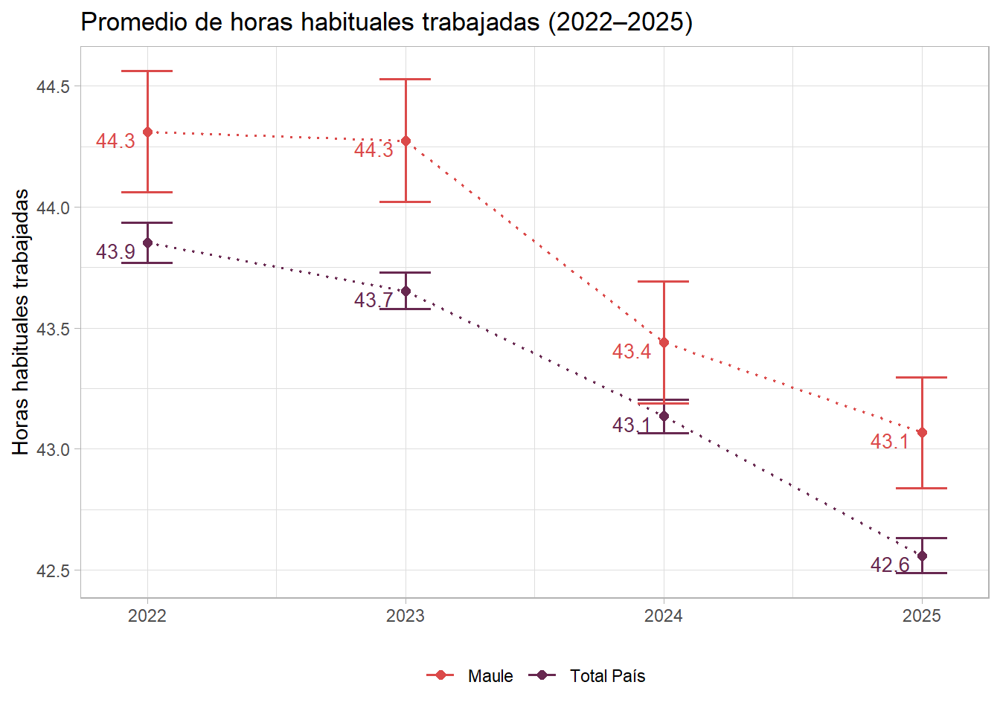
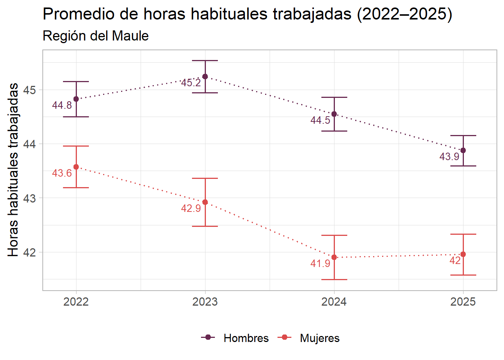
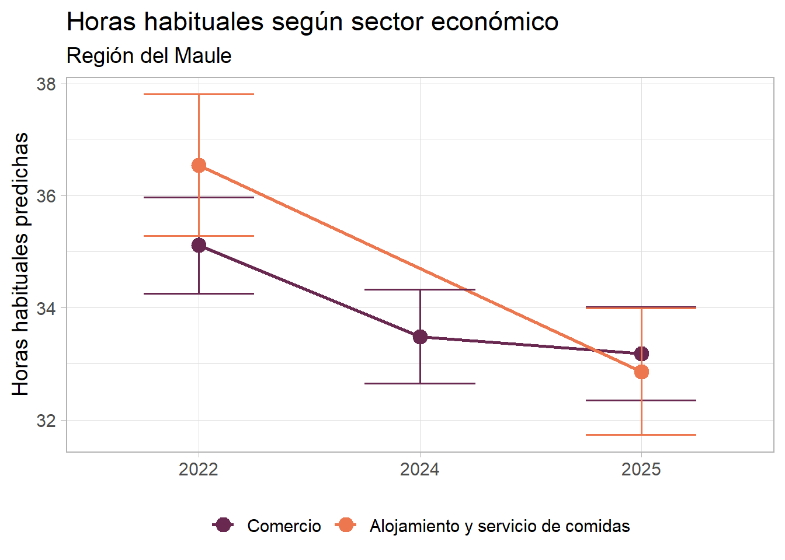
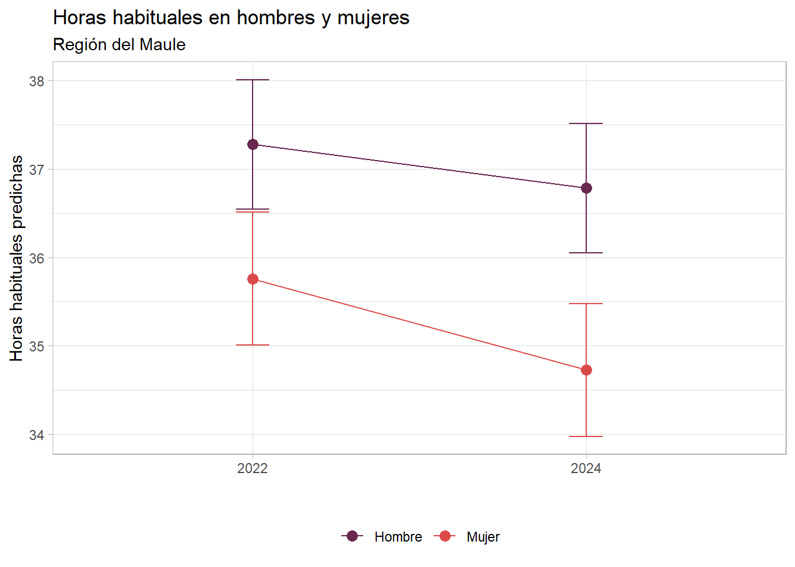
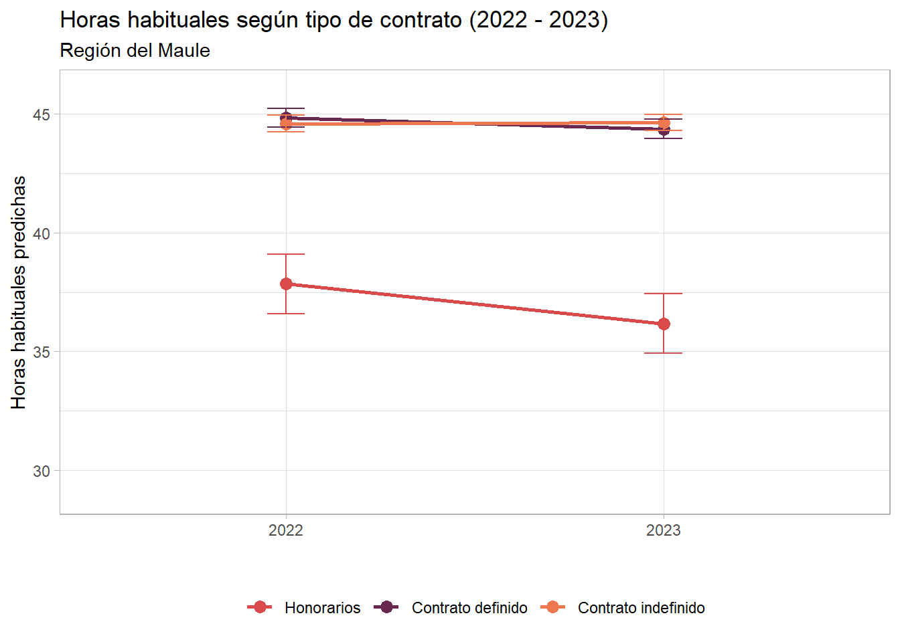
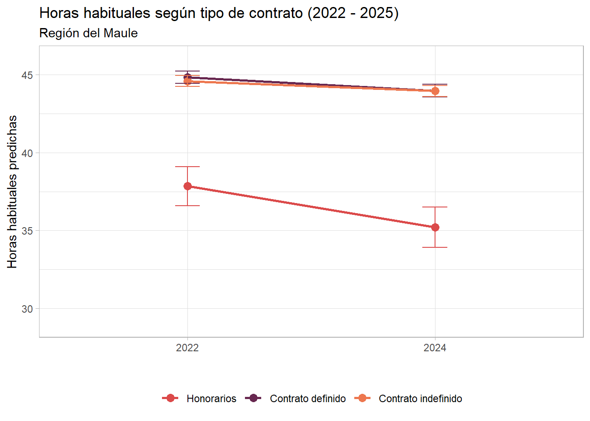
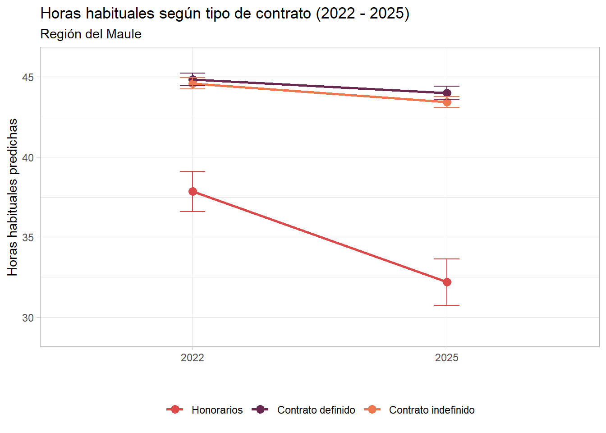
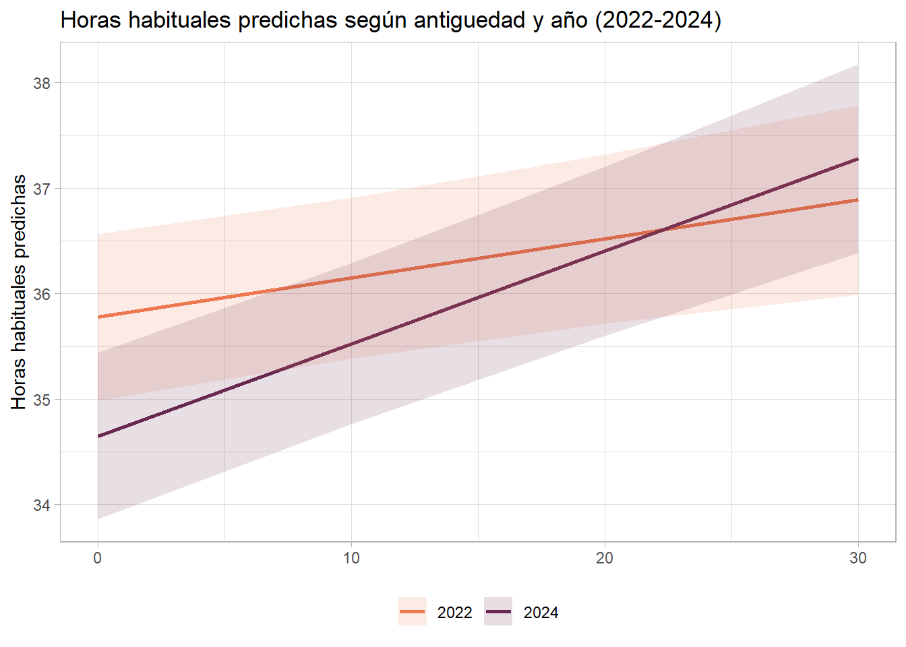
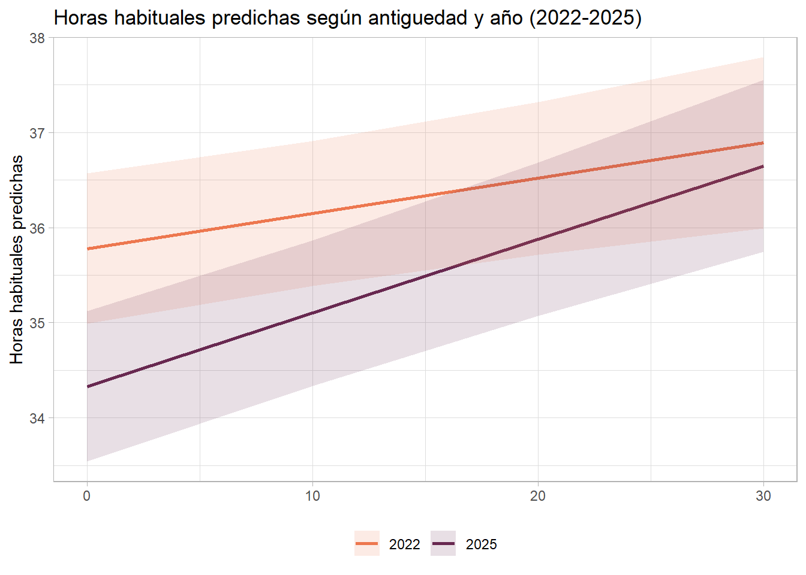
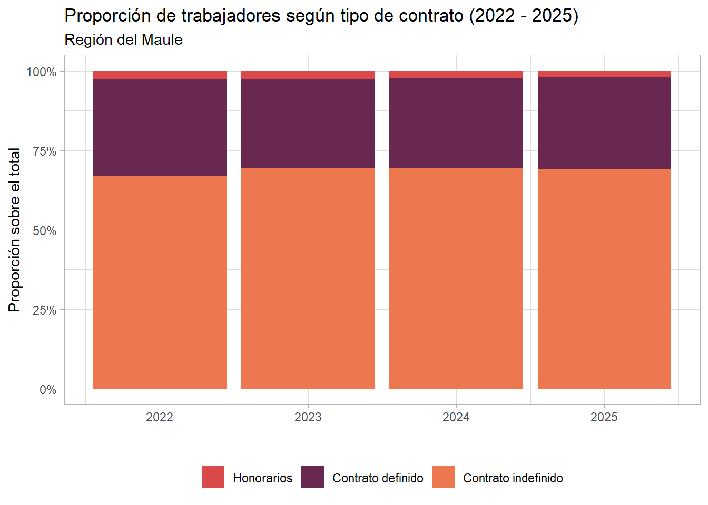

rm(list = ls())
options(scipen = 999)
options(survey.lonely.psu = "adjust")
library(pacman)
pacman::p_load(tidyverse, rio,scales, tidyr, sjlabelled, here, sjmisc, srvyr,survey,car,
janitor, knitr, kableExtra, patchwork, writexl, ggeffects, marginaleffects)1. Cargar librerías
2. Preparar los datos
ene <- readRDS("output/ene_long22-25_proc.rds")
ene <- ene %>% mutate(habituales = as.numeric(habituales),
region = as.factor(region))
ene$region <- relevel(ene$region, ref = "Metropolitana")
ene <- ene %>% mutate(year_c = as.factor(year_c))
ene_pond <- as_survey_design(
.data = ene,
ids = 1,
strata = estrato,
weights = fact_anual)
ene_pond <- subset(ene_pond, informal == 0)
subset1 <- subset(ene_pond, region == "Maule")
subset1 <- subset(subset1, informal == 0)3. Descriptivos
3.1. Horas trabajadas por región ———————————
# Promedio por año - Total País
tabla1_a <- svyby(
~habituales,
~ano_encuesta,
design = ene_pond,
FUN = svymean,
na.rm = TRUE,
vartype = c("ci")
) %>%
mutate(region = "Total País")
# Promedio por año - Maule
tabla1_b <- svyby(
~habituales,
~ano_encuesta,
design = subset(ene_pond, region == "Maule"),
FUN = svymean,
na.rm = TRUE,
vartype = c("ci")
) %>%
mutate(region = "Maule")
# Unir tablas
tabla1_ab <- bind_rows(tabla1_a, tabla1_b) %>%
select(region, ano_encuesta, habituales, ci_l, ci_u) %>%
rename(
promedio = habituales,
promedio_low = ci_l,
promedio_upp = ci_u
)3.2. Variacion del promedio de horas habituales en hombres y mujeres
# Promedio por año - Hombres
tabla2_a <- svyby(
~habituales,
~ano_encuesta,
design = subset(subset1, mujer == 0),
FUN = svymean,
na.rm = TRUE,
vartype = c("ci")
) %>%
mutate(mujer = 0)
# Promedio por año - Mujeres
tabla2_b <- svyby(
~habituales,
~ano_encuesta,
design = subset(subset1, mujer == 1),
FUN = svymean,
na.rm = TRUE,
vartype = c("ci")
) %>%
mutate(mujer = 1)
# Unir tablas y renombrar columnas
tabla2_ab <- bind_rows(tabla2_a, tabla2_b) %>%
select(mujer, ano_encuesta, habituales, ci_l, ci_u) %>%
rename(
promedio = habituales,
promedio_low = ci_l,
promedio_upp = ci_u
)3.3. Numero de trabajadores segun tipo de contrato en el tiempo
subset1 <- update(subset1, uno = 1)
tabla3 <- svyby(
~uno,
~ano_encuesta + tipo_contrato,
design = subset1,
FUN = svytotal,
na.rm = TRUE,
vartype = c("ci")
) %>%
rename(
total = uno,
total_low = ci_l,
total_upp = ci_u
) %>%
group_by(ano_encuesta) %>%
mutate(
year_total = sum(total),
propor = total / year_total,
propor_low = total_low / year_total,
propor_upp = total_upp / year_total
) %>%
ungroup()3.4. Trabajadores a honorarios según género
tabla4 <- svyby(
~uno,
~ano_encuesta + mujer,
design = subset(subset1, tipo_contrato == "1"),
FUN = svytotal,
na.rm = TRUE,
vartype = c("ci")
) %>%
rename(
total = uno,
total_low = ci_l,
total_upp = ci_u
) %>%
group_by(ano_encuesta) %>%
mutate(
year_total = sum(total),
propor = total / year_total,
propor_low = total_low / year_total,
propor_upp = total_upp / year_total
) %>%
ungroup()4. Modelos de regresion
4.1. Modelo 1: Sin interacción
ene <- ene %>% mutate(hab_tramos = as.numeric(hab_tramos))
model1a <- lm(habituales ~ mujer +
year_c +
maule_dummy, data = ene_pond)
model1b <- lm(habituales ~ mujer +
year_c + region +
antiguedad +
con_pareja +
tipo_contrato +
tamano +
rama, data = ene_pond)
model1c <- lm(hab_tramos ~ mujer +
year_c + region +
antiguedad +
con_pareja +
tipo_contrato +
tamano +
rama, data = ene)
summary(model1a)
Call:
lm(formula = habituales ~ mujer + year_c + maule_dummy, data = ene_pond)
Residuals:
Min 1Q Median 3Q Max
-43.733 -1.406 0.594 2.647 126.779
Coefficients:
Estimate Std. Error t value Pr(>|t|)
(Intercept) 44.73332 0.03385 1321.502 < 0.0000000000000002 ***
mujer -2.18508 0.02976 -73.415 < 0.0000000000000002 ***
year_c1 -0.19526 0.04275 -4.567 0.00000495 ***
year_c2 -0.76867 0.04245 -18.107 < 0.0000000000000002 ***
year_c3 -1.32763 0.04225 -31.420 < 0.0000000000000002 ***
maule_dummy 0.61521 0.05814 10.582 < 0.0000000000000002 ***
---
Signif. codes: 0 '***' 0.001 '**' 0.01 '*' 0.05 '.' 0.1 ' ' 1
Residual standard error: 9.929 on 451718 degrees of freedom
(833 observations deleted due to missingness)
Multiple R-squared: 0.01479, Adjusted R-squared: 0.01477
F-statistic: 1356 on 5 and 451718 DF, p-value: < 0.00000000000000022summary(model1b)
Call:
lm(formula = habituales ~ mujer + year_c + region + antiguedad +
con_pareja + tipo_contrato + tamano + rama, data = ene_pond)
Residuals:
Min 1Q Median 3Q Max
-44.834 -1.154 0.761 2.555 133.156
Coefficients:
Estimate
(Intercept) 36.408553
mujer -1.507511
year_c1 -0.089655
year_c2 -0.619936
year_c3 -1.127028
regionTarapacá 0.217935
regionAntofagasta -0.207338
regionAtacama -0.372525
regionCoquimbo -0.614642
regionValparaíso -0.725614
regionO'Higgins -0.008893
regionMaule -0.210747
regionBiobío -0.579158
regionLa Araucanía -0.420977
regionLos Lagos -0.735640
regionAysén -0.550004
regionMagallanes -0.573633
regionLos Ríos -0.490393
regionArica y Parinacota -0.588082
regionÑuble -0.400872
antiguedad 0.061246
con_pareja 0.705713
tipo_contrato2 7.154336
tipo_contrato3 7.628131
tamanoMediana 0.160393
tamanoMicroempresas -0.388781
tamanoPequeña 0.105708
ramaActividades financieras y de seguros -0.645398
ramaActividades profesionales y técnicas -0.516010
ramaAgricultura, ganadería, silvicultura y pesca 0.828040
ramaAlojamiento y servicio de comidas -0.533848
ramaComercio -0.813167
ramaConstrucción 0.619032
ramaElectricidad, gas y agua; desechos -0.336356
ramaEnseñanza -2.288193
ramaManufactura 0.624933
ramaMinería -0.879779
ramaSalud y asistencia social -0.011230
ramaTransporte, almacenamiento,\ninformación y comunicaciones 0.883818
Std. Error
(Intercept) 0.100587
mujer 0.028841
year_c1 0.037465
year_c2 0.037120
year_c3 0.036898
regionTarapacá 0.088504
regionAntofagasta 0.065548
regionAtacama 0.070513
regionCoquimbo 0.063094
regionValparaíso 0.047615
regionO'Higgins 0.061759
regionMaule 0.057917
regionBiobío 0.047724
regionLa Araucanía 0.067199
regionLos Lagos 0.060224
regionAysén 0.082998
regionMagallanes 0.078428
regionLos Ríos 0.072025
regionArica y Parinacota 0.081816
regionÑuble 0.073673
antiguedad 0.001683
con_pareja 0.027235
tipo_contrato2 0.087055
tipo_contrato3 0.081589
tamanoMediana 0.036093
tamanoMicroempresas 0.044060
tamanoPequeña 0.037462
ramaActividades financieras y de seguros 0.100684
ramaActividades profesionales y técnicas 0.053917
ramaAgricultura, ganadería, silvicultura y pesca 0.059791
ramaAlojamiento y servicio de comidas 0.069280
ramaComercio 0.048982
ramaConstrucción 0.059046
ramaElectricidad, gas y agua; desechos 0.112251
ramaEnseñanza 0.054354
ramaManufactura 0.054642
ramaMinería 0.083961
ramaSalud y asistencia social 0.060007
ramaTransporte, almacenamiento,\ninformación y comunicaciones 0.059642
t value
(Intercept) 361.962
mujer -52.269
year_c1 -2.393
year_c2 -16.701
year_c3 -30.545
regionTarapacá 2.462
regionAntofagasta -3.163
regionAtacama -5.283
regionCoquimbo -9.742
regionValparaíso -15.239
regionO'Higgins -0.144
regionMaule -3.639
regionBiobío -12.135
regionLa Araucanía -6.265
regionLos Lagos -12.215
regionAysén -6.627
regionMagallanes -7.314
regionLos Ríos -6.809
regionArica y Parinacota -7.188
regionÑuble -5.441
antiguedad 36.386
con_pareja 25.912
tipo_contrato2 82.181
tipo_contrato3 93.494
tamanoMediana 4.444
tamanoMicroempresas -8.824
tamanoPequeña 2.822
ramaActividades financieras y de seguros -6.410
ramaActividades profesionales y técnicas -9.571
ramaAgricultura, ganadería, silvicultura y pesca 13.849
ramaAlojamiento y servicio de comidas -7.706
ramaComercio -16.601
ramaConstrucción 10.484
ramaElectricidad, gas y agua; desechos -2.996
ramaEnseñanza -42.098
ramaManufactura 11.437
ramaMinería -10.478
ramaSalud y asistencia social -0.187
ramaTransporte, almacenamiento,\ninformación y comunicaciones 14.819
Pr(>|t|)
(Intercept) < 0.0000000000000002
mujer < 0.0000000000000002
year_c1 0.016712
year_c2 < 0.0000000000000002
year_c3 < 0.0000000000000002
regionTarapacá 0.013800
regionAntofagasta 0.001561
regionAtacama 0.0000001271166200
regionCoquimbo < 0.0000000000000002
regionValparaíso < 0.0000000000000002
regionO'Higgins 0.885500
regionMaule 0.000274
regionBiobío < 0.0000000000000002
regionLa Araucanía 0.0000000003741919
regionLos Lagos < 0.0000000000000002
regionAysén 0.0000000000343695
regionMagallanes 0.0000000000002596
regionLos Ríos 0.0000000000098699
regionArica y Parinacota 0.0000000000006595
regionÑuble 0.0000000529556661
antiguedad < 0.0000000000000002
con_pareja < 0.0000000000000002
tipo_contrato2 < 0.0000000000000002
tipo_contrato3 < 0.0000000000000002
tamanoMediana 0.0000088381160142
tamanoMicroempresas < 0.0000000000000002
tamanoPequeña 0.004776
ramaActividades financieras y de seguros 0.0000000001456071
ramaActividades profesionales y técnicas < 0.0000000000000002
ramaAgricultura, ganadería, silvicultura y pesca < 0.0000000000000002
ramaAlojamiento y servicio de comidas 0.0000000000000131
ramaComercio < 0.0000000000000002
ramaConstrucción < 0.0000000000000002
ramaElectricidad, gas y agua; desechos 0.002732
ramaEnseñanza < 0.0000000000000002
ramaManufactura < 0.0000000000000002
ramaMinería < 0.0000000000000002
ramaSalud y asistencia social 0.851550
ramaTransporte, almacenamiento,\ninformación y comunicaciones < 0.0000000000000002
(Intercept) ***
mujer ***
year_c1 *
year_c2 ***
year_c3 ***
regionTarapacá *
regionAntofagasta **
regionAtacama ***
regionCoquimbo ***
regionValparaíso ***
regionO'Higgins
regionMaule ***
regionBiobío ***
regionLa Araucanía ***
regionLos Lagos ***
regionAysén ***
regionMagallanes ***
regionLos Ríos ***
regionArica y Parinacota ***
regionÑuble ***
antiguedad ***
con_pareja ***
tipo_contrato2 ***
tipo_contrato3 ***
tamanoMediana ***
tamanoMicroempresas ***
tamanoPequeña **
ramaActividades financieras y de seguros ***
ramaActividades profesionales y técnicas ***
ramaAgricultura, ganadería, silvicultura y pesca ***
ramaAlojamiento y servicio de comidas ***
ramaComercio ***
ramaConstrucción ***
ramaElectricidad, gas y agua; desechos **
ramaEnseñanza ***
ramaManufactura ***
ramaMinería ***
ramaSalud y asistencia social
ramaTransporte, almacenamiento,\ninformación y comunicaciones ***
---
Signif. codes: 0 '***' 0.001 '**' 0.01 '*' 0.05 '.' 0.1 ' ' 1
Residual standard error: 7.577 on 346252 degrees of freedom
(106266 observations deleted due to missingness)
Multiple R-squared: 0.07253, Adjusted R-squared: 0.07243
F-statistic: 712.5 on 38 and 346252 DF, p-value: < 0.00000000000000022vif_tabla <- as.data.frame(vif(model1b))
if (ncol(vif_tabla) == 3) {
vif_tabla$GVIF_ajustado <- vif_tabla$GVIF^(1 / (2 * vif_tabla$Df))
vif_tabla <- vif_tabla %>%
mutate(variable = rownames(vif_tabla)) %>%
select(variable, GVIF, Df, GVIF_ajustado)
} else {
vif_tabla <- vif_tabla %>%
mutate(variable = rownames(vif_tabla)) %>%
rename(VIF = .)}este modelo nos indica que: 1. Ser mujer esta relacionado con trabajar menos horas de trabajo. Se mantiene al agregar controles 2. Ser del maule está relacionado positivamente con trabajar mas horas
4.2. Modelo 2: Interacción género y año MAULE
model2a <- lm(habituales ~ mujer *
year_c # + maule_dummy
, data = subset1)
# Modelo solo con controles relacionados a características personales
model2b <- lm(habituales ~ mujer *
year_c + #maule_dummy +
antiguedad +
con_pareja, data = subset1)
# Modelo solo con controles relacionados a características del empleo
model2c <- lm(habituales ~ mujer *
year_c + #maule_dummy +
tipo_contrato +
tamano +
rama, data = subset1)
# Modelo con todas las variables
model2d <- lm(habituales ~ mujer *
year_c + #maule_dummy +
antiguedad +
con_pareja +
tipo_contrato +
tamano +
rama, data = subset1)
summary(model2a)
Call:
lm(formula = habituales ~ mujer * year_c, data = subset1)
Residuals:
Min 1Q Median 3Q Max
-43.244 -0.770 0.207 2.020 87.756
Coefficients:
Estimate Std. Error t value Pr(>|t|)
(Intercept) 44.79268 0.15323 292.319 < 0.0000000000000002 ***
mujer -1.06628 0.23309 -4.575 0.00000479 ***
year_c1 0.45089 0.21504 2.097 0.036020 *
year_c2 -0.02251 0.21514 -0.105 0.916686
year_c3 -0.89581 0.21584 -4.150 0.00003327 ***
mujer:year_c1 -1.23248 0.32818 -3.755 0.000173 ***
mujer:year_c2 -1.47714 0.32747 -4.511 0.00000648 ***
mujer:year_c3 -0.85092 0.32746 -2.599 0.009366 **
---
Signif. codes: 0 '***' 0.001 '**' 0.01 '*' 0.05 '.' 0.1 ' ' 1
Residual standard error: 10.13 on 31341 degrees of freedom
(45 observations deleted due to missingness)
Multiple R-squared: 0.01237, Adjusted R-squared: 0.01215
F-statistic: 56.07 on 7 and 31341 DF, p-value: < 0.00000000000000022summary(model2b)
Call:
lm(formula = habituales ~ mujer * year_c + antiguedad + con_pareja,
data = subset1)
Residuals:
Min 1Q Median 3Q Max
-46.004 -1.217 0.495 2.119 87.737
Coefficients:
Estimate Std. Error t value Pr(>|t|)
(Intercept) 43.587534 0.182925 238.281 < 0.0000000000000002 ***
mujer -0.928854 0.244533 -3.798 0.000146 ***
year_c1 0.396634 0.219957 1.803 0.071363 .
year_c2 -0.111827 0.220678 -0.507 0.612338
year_c3 -0.975231 0.221115 -4.411 0.000010350268 ***
antiguedad 0.082897 0.006173 13.429 < 0.0000000000000002 ***
con_pareja 0.781019 0.125973 6.200 0.000000000573 ***
mujer:year_c1 -1.287224 0.342657 -3.757 0.000173 ***
mujer:year_c2 -1.600701 0.343352 -4.662 0.000003145992 ***
mujer:year_c3 -0.709028 0.341438 -2.077 0.037848 *
---
Signif. codes: 0 '***' 0.001 '**' 0.01 '*' 0.05 '.' 0.1 ' ' 1
Residual standard error: 10.01 on 28325 degrees of freedom
(3059 observations deleted due to missingness)
Multiple R-squared: 0.0219, Adjusted R-squared: 0.02159
F-statistic: 70.48 on 9 and 28325 DF, p-value: < 0.00000000000000022summary(model2c)
Call:
lm(formula = habituales ~ mujer * year_c + tipo_contrato + tamano +
rama, data = subset1)
Residuals:
Min 1Q Median 3Q Max
-41.334 -0.657 0.809 2.255 86.423
Coefficients:
Estimate
(Intercept) 36.05348
mujer -1.51819
year_c1 0.04423
year_c2 -0.49408
year_c3 -1.19892
tipo_contrato2 7.96387
tipo_contrato3 8.33657
tamanoMediana 0.34519
tamanoMicroempresas -0.50207
tamanoPequeña 0.16481
ramaActividades financieras y de seguros 0.44695
ramaActividades profesionales y técnicas -0.84066
ramaAgricultura, ganadería, silvicultura y pesca 1.22329
ramaAlojamiento y servicio de comidas 0.49027
ramaComercio -0.33901
ramaConstrucción 0.30913
ramaElectricidad, gas y agua; desechos -0.15962
ramaEnseñanza -1.66892
ramaManufactura 1.28116
ramaMinería -1.98845
ramaSalud y asistencia social 0.68565
ramaTransporte, almacenamiento,\ninformación y comunicaciones 1.79786
mujer:year_c1 -0.36768
mujer:year_c2 -0.53747
mujer:year_c3 0.07217
Std. Error
(Intercept) 0.36339
mujer 0.18513
year_c1 0.16793
year_c2 0.16826
year_c3 0.16770
tipo_contrato2 0.33806
tipo_contrato3 0.32619
tamanoMediana 0.12830
tamanoMicroempresas 0.14257
tamanoPequeña 0.12895
ramaActividades financieras y de seguros 0.39192
ramaActividades profesionales y técnicas 0.20867
ramaAgricultura, ganadería, silvicultura y pesca 0.16224
ramaAlojamiento y servicio de comidas 0.25190
ramaComercio 0.15756
ramaConstrucción 0.21463
ramaElectricidad, gas y agua; desechos 0.39776
ramaEnseñanza 0.19466
ramaManufactura 0.18830
ramaMinería 0.50828
ramaSalud y asistencia social 0.23557
ramaTransporte, almacenamiento,\ninformación y comunicaciones 0.23416
mujer:year_c1 0.25410
mujer:year_c2 0.25417
mujer:year_c3 0.25264
t value
(Intercept) 99.214
mujer -8.201
year_c1 0.263
year_c2 -2.936
year_c3 -7.149
tipo_contrato2 23.557
tipo_contrato3 25.558
tamanoMediana 2.690
tamanoMicroempresas -3.522
tamanoPequeña 1.278
ramaActividades financieras y de seguros 1.140
ramaActividades profesionales y técnicas -4.029
ramaAgricultura, ganadería, silvicultura y pesca 7.540
ramaAlojamiento y servicio de comidas 1.946
ramaComercio -2.152
ramaConstrucción 1.440
ramaElectricidad, gas y agua; desechos -0.401
ramaEnseñanza -8.573
ramaManufactura 6.804
ramaMinería -3.912
ramaSalud y asistencia social 2.911
ramaTransporte, almacenamiento,\ninformación y comunicaciones 7.678
mujer:year_c1 -1.447
mujer:year_c2 -2.115
mujer:year_c3 0.286
Pr(>|t|)
(Intercept) < 0.0000000000000002
mujer 0.00000000000000025
year_c1 0.79225
year_c2 0.00332
year_c3 0.00000000000089580
tipo_contrato2 < 0.0000000000000002
tipo_contrato3 < 0.0000000000000002
tamanoMediana 0.00714
tamanoMicroempresas 0.00043
tamanoPequeña 0.20124
ramaActividades financieras y de seguros 0.25413
ramaActividades profesionales y técnicas 0.00005623517978667
ramaAgricultura, ganadería, silvicultura y pesca 0.00000000000004858
ramaAlojamiento y servicio de comidas 0.05163
ramaComercio 0.03144
ramaConstrucción 0.14980
ramaElectricidad, gas y agua; desechos 0.68822
ramaEnseñanza < 0.0000000000000002
ramaManufactura 0.00000000001041425
ramaMinería 0.00009173938257908
ramaSalud y asistencia social 0.00361
ramaTransporte, almacenamiento,\ninformación y comunicaciones 0.00000000000001675
mujer:year_c1 0.14792
mujer:year_c2 0.03447
mujer:year_c3 0.77513
(Intercept) ***
mujer ***
year_c1
year_c2 **
year_c3 ***
tipo_contrato2 ***
tipo_contrato3 ***
tamanoMediana **
tamanoMicroempresas ***
tamanoPequeña
ramaActividades financieras y de seguros
ramaActividades profesionales y técnicas ***
ramaAgricultura, ganadería, silvicultura y pesca ***
ramaAlojamiento y servicio de comidas .
ramaComercio *
ramaConstrucción
ramaElectricidad, gas y agua; desechos
ramaEnseñanza ***
ramaManufactura ***
ramaMinería ***
ramaSalud y asistencia social **
ramaTransporte, almacenamiento,\ninformación y comunicaciones ***
mujer:year_c1
mujer:year_c2 *
mujer:year_c3
---
Signif. codes: 0 '***' 0.001 '**' 0.01 '*' 0.05 '.' 0.1 ' ' 1
Residual standard error: 7.13 on 25801 degrees of freedom
(5568 observations deleted due to missingness)
Multiple R-squared: 0.07321, Adjusted R-squared: 0.07235
F-statistic: 84.92 on 24 and 25801 DF, p-value: < 0.00000000000000022summary(model2d)
Call:
lm(formula = habituales ~ mujer * year_c + antiguedad + con_pareja +
tipo_contrato + tamano + rama, data = subset1)
Residuals:
Min 1Q Median 3Q Max
-40.522 -0.742 0.706 2.229 86.231
Coefficients:
Estimate
(Intercept) 34.242385
mujer -1.295171
year_c1 0.028945
year_c2 -0.500906
year_c3 -1.177550
antiguedad 0.066438
con_pareja 0.708169
tipo_contrato2 8.757759
tipo_contrato3 8.614276
tamanoMediana 0.501617
tamanoMicroempresas -0.143570
tamanoPequeña 0.316889
ramaActividades financieras y de seguros 0.590248
ramaActividades profesionales y técnicas -0.331179
ramaAgricultura, ganadería, silvicultura y pesca 1.424271
ramaAlojamiento y servicio de comidas 0.853979
ramaComercio 0.013731
ramaConstrucción 0.696566
ramaElectricidad, gas y agua; desechos 0.038812
ramaEnseñanza -1.610910
ramaManufactura 1.582596
ramaMinería -1.551710
ramaSalud y asistencia social 1.010563
ramaTransporte, almacenamiento,\ninformación y comunicaciones 2.274824
mujer:year_c1 -0.412470
mujer:year_c2 -0.596193
mujer:year_c3 0.041510
Std. Error
(Intercept) 0.404355
mujer 0.196596
year_c1 0.173965
year_c2 0.174629
year_c3 0.173879
antiguedad 0.006258
con_pareja 0.098664
tipo_contrato2 0.362686
tipo_contrato3 0.345703
tamanoMediana 0.134569
tamanoMicroempresas 0.149702
tamanoPequeña 0.135552
ramaActividades financieras y de seguros 0.417770
ramaActividades profesionales y técnicas 0.225557
ramaAgricultura, ganadería, silvicultura y pesca 0.172933
ramaAlojamiento y servicio de comidas 0.271973
ramaComercio 0.169990
ramaConstrucción 0.228937
ramaElectricidad, gas y agua; desechos 0.420380
ramaEnseñanza 0.205745
ramaManufactura 0.198648
ramaMinería 0.537564
ramaSalud y asistencia social 0.248412
ramaTransporte, almacenamiento,\ninformación y comunicaciones 0.248766
mujer:year_c1 0.268380
mujer:year_c2 0.269375
mujer:year_c3 0.266421
t value
(Intercept) 84.684
mujer -6.588
year_c1 0.166
year_c2 -2.868
year_c3 -6.772
antiguedad 10.616
con_pareja 7.178
tipo_contrato2 24.147
tipo_contrato3 24.918
tamanoMediana 3.728
tamanoMicroempresas -0.959
tamanoPequeña 2.338
ramaActividades financieras y de seguros 1.413
ramaActividades profesionales y técnicas -1.468
ramaAgricultura, ganadería, silvicultura y pesca 8.236
ramaAlojamiento y servicio de comidas 3.140
ramaComercio 0.081
ramaConstrucción 3.043
ramaElectricidad, gas y agua; desechos 0.092
ramaEnseñanza -7.830
ramaManufactura 7.967
ramaMinería -2.887
ramaSalud y asistencia social 4.068
ramaTransporte, almacenamiento,\ninformación y comunicaciones 9.144
mujer:year_c1 -1.537
mujer:year_c2 -2.213
mujer:year_c3 0.156
Pr(>|t|)
(Intercept) < 0.0000000000000002
mujer 0.0000000000455320
year_c1 0.867855
year_c2 0.004129
year_c3 0.0000000000129805
antiguedad < 0.0000000000000002
con_pareja 0.0000000000007307
tipo_contrato2 < 0.0000000000000002
tipo_contrato3 < 0.0000000000000002
tamanoMediana 0.000194
tamanoMicroempresas 0.337550
tamanoPequeña 0.019408
ramaActividades financieras y de seguros 0.157711
ramaActividades profesionales y técnicas 0.142043
ramaAgricultura, ganadería, silvicultura y pesca < 0.0000000000000002
ramaAlojamiento y servicio de comidas 0.001692
ramaComercio 0.935623
ramaConstrucción 0.002348
ramaElectricidad, gas y agua; desechos 0.926441
ramaEnseñanza 0.0000000000000051
ramaManufactura 0.0000000000000017
ramaMinería 0.003898
ramaSalud y asistencia social 0.0000475567350928
ramaTransporte, almacenamiento,\ninformación y comunicaciones < 0.0000000000000002
mujer:year_c1 0.124334
mujer:year_c2 0.026890
mujer:year_c3 0.876186
(Intercept) ***
mujer ***
year_c1
year_c2 **
year_c3 ***
antiguedad ***
con_pareja ***
tipo_contrato2 ***
tipo_contrato3 ***
tamanoMediana ***
tamanoMicroempresas
tamanoPequeña *
ramaActividades financieras y de seguros
ramaActividades profesionales y técnicas
ramaAgricultura, ganadería, silvicultura y pesca ***
ramaAlojamiento y servicio de comidas **
ramaComercio
ramaConstrucción **
ramaElectricidad, gas y agua; desechos
ramaEnseñanza ***
ramaManufactura ***
ramaMinería **
ramaSalud y asistencia social ***
ramaTransporte, almacenamiento,\ninformación y comunicaciones ***
mujer:year_c1
mujer:year_c2 *
mujer:year_c3
---
Signif. codes: 0 '***' 0.001 '**' 0.01 '*' 0.05 '.' 0.1 ' ' 1
Residual standard error: 7.138 on 23400 degrees of freedom
(7967 observations deleted due to missingness)
Multiple R-squared: 0.07984, Adjusted R-squared: 0.07882
F-statistic: 78.09 on 26 and 23400 DF, p-value: < 0.00000000000000022vif_tabla <- as.data.frame(vif(model2d))there are higher-order terms (interactions) in this model
consider setting type = 'predictor'; see ?vifif (ncol(vif_tabla) == 3) {
vif_tabla$GVIF_ajustado <- vif_tabla$GVIF^(1 / (2 * vif_tabla$Df))
vif_tabla <- vif_tabla %>%
mutate(variable = rownames(vif_tabla)) %>%
select(variable, GVIF, Df, GVIF_ajustado)
} else {
vif_tabla <- vif_tabla %>%
mutate(variable = rownames(vif_tabla)) %>%
rename(VIF = .)}Este modelo indica: 1. No hay diferencias en la variación de horas entre hombres y mujeres 2. El efecto temporal por género aparece ligeramente al controlar por variables estructurales. Efecto overlap que no se interpretar muy bien, quizás no es tan necesario ya que la significancia es debil p<0.1
4.3. Modelo 3: Interacción año y rama
model3a <- lm(habituales ~ rama * year_c +
mujer #+ maule_dummy
, data = subset1)
model3b <- lm(habituales ~ rama * year_c +
mujer + #maule_dummy +
antiguedad +
con_pareja +
tipo_contrato +
tamano, data = subset1)
summary(model3a)
Call:
lm(formula = habituales ~ rama * year_c + mujer, data = subset1)
Residuals:
Min 1Q Median 3Q Max
-45.622 -1.102 0.596 2.463 86.717
Coefficients:
Estimate
(Intercept) 43.795391
ramaActividades financieras y de seguros 0.532901
ramaActividades profesionales y técnicas -0.828854
ramaAgricultura, ganadería, silvicultura y pesca 1.667764
ramaAlojamiento y servicio de comidas 3.327225
ramaComercio 3.826757
ramaConstrucción 0.115742
ramaElectricidad, gas y agua; desechos -0.293752
ramaEnseñanza -1.532777
ramaManufactura 1.716802
ramaMinería -2.059695
ramaSalud y asistencia social 0.648906
ramaTransporte, almacenamiento,\ninformación y comunicaciones 1.398636
year_c1 0.084424
year_c2 -0.732209
year_c3 -0.843226
mujer -1.520478
ramaActividades financieras y de seguros:year_c1 -0.578437
ramaActividades profesionales y técnicas:year_c1 -1.250835
ramaAgricultura, ganadería, silvicultura y pesca:year_c1 0.263983
ramaAlojamiento y servicio de comidas:year_c1 -1.425431
ramaComercio:year_c1 -0.923139
ramaConstrucción:year_c1 0.306149
ramaElectricidad, gas y agua; desechos:year_c1 -0.336110
ramaEnseñanza:year_c1 -0.218223
ramaManufactura:year_c1 -0.005489
ramaMinería:year_c1 0.105807
ramaSalud y asistencia social:year_c1 -0.470835
ramaTransporte, almacenamiento,\ninformación y comunicaciones:year_c1 1.004493
ramaActividades financieras y de seguros:year_c2 0.330094
ramaActividades profesionales y técnicas:year_c2 -1.315393
ramaAgricultura, ganadería, silvicultura y pesca:year_c2 1.076717
ramaAlojamiento y servicio de comidas:year_c2 -0.476683
ramaComercio:year_c2 -1.194365
ramaConstrucción:year_c2 0.976258
ramaElectricidad, gas y agua; desechos:year_c2 0.988812
ramaEnseñanza:year_c2 0.101762
ramaManufactura:year_c2 0.899395
ramaMinería:year_c2 1.506317
ramaSalud y asistencia social:year_c2 -0.103670
ramaTransporte, almacenamiento,\ninformación y comunicaciones:year_c2 -0.245275
ramaActividades financieras y de seguros:year_c3 -0.546549
ramaActividades profesionales y técnicas:year_c3 -0.642427
ramaAgricultura, ganadería, silvicultura y pesca:year_c3 0.255056
ramaAlojamiento y servicio de comidas:year_c3 -2.895412
ramaComercio:year_c3 -1.854924
ramaConstrucción:year_c3 -0.248855
ramaElectricidad, gas y agua; desechos:year_c3 -0.084966
ramaEnseñanza:year_c3 0.940684
ramaManufactura:year_c3 0.235247
ramaMinería:year_c3 0.362044
ramaSalud y asistencia social:year_c3 -1.420524
ramaTransporte, almacenamiento,\ninformación y comunicaciones:year_c3 -0.629342
Std. Error
(Intercept) 0.288472
ramaActividades financieras y de seguros 1.065613
ramaActividades profesionales y técnicas 0.508077
ramaAgricultura, ganadería, silvicultura y pesca 0.376682
ramaAlojamiento y servicio de comidas 0.676451
ramaComercio 0.392431
ramaConstrucción 0.506644
ramaElectricidad, gas y agua; desechos 1.042974
ramaEnseñanza 0.527866
ramaManufactura 0.470404
ramaMinería 1.433758
ramaSalud y asistencia social 0.677520
ramaTransporte, almacenamiento,\ninformación y comunicaciones 0.589427
year_c1 0.379156
year_c2 0.380173
year_c3 0.393627
mujer 0.127044
ramaActividades financieras y de seguros:year_c1 1.467024
ramaActividades profesionales y técnicas:year_c1 0.721699
ramaAgricultura, ganadería, silvicultura y pesca:year_c1 0.523051
ramaAlojamiento y servicio de comidas:year_c1 0.896425
ramaComercio:year_c1 0.539078
ramaConstrucción:year_c1 0.726298
ramaElectricidad, gas y agua; desechos:year_c1 1.510141
ramaEnseñanza:year_c1 0.750096
ramaManufactura:year_c1 0.665362
ramaMinería:year_c1 1.994955
ramaSalud y asistencia social:year_c1 0.927686
ramaTransporte, almacenamiento,\ninformación y comunicaciones:year_c1 0.818535
ramaActividades financieras y de seguros:year_c2 1.500668
ramaActividades profesionales y técnicas:year_c2 0.733318
ramaAgricultura, ganadería, silvicultura y pesca:year_c2 0.524173
ramaAlojamiento y servicio de comidas:year_c2 0.913402
ramaComercio:year_c2 0.540081
ramaConstrucción:year_c2 0.721080
ramaElectricidad, gas y agua; desechos:year_c2 1.514634
ramaEnseñanza:year_c2 0.724356
ramaManufactura:year_c2 0.665573
ramaMinería:year_c2 2.022430
ramaSalud y asistencia social:year_c2 0.906260
ramaTransporte, almacenamiento,\ninformación y comunicaciones:year_c2 0.820234
ramaActividades financieras y de seguros:year_c3 1.641251
ramaActividades profesionales y técnicas:year_c3 0.739188
ramaAgricultura, ganadería, silvicultura y pesca:year_c3 0.533835
ramaAlojamiento y servicio de comidas:year_c3 0.893361
ramaComercio:year_c3 0.548139
ramaConstrucción:year_c3 0.722965
ramaElectricidad, gas y agua; desechos:year_c3 1.465564
ramaEnseñanza:year_c3 0.738036
ramaManufactura:year_c3 0.666468
ramaMinería:year_c3 1.893672
ramaSalud y asistencia social:year_c3 0.904353
ramaTransporte, almacenamiento,\ninformación y comunicaciones:year_c3 0.816548
t value
(Intercept) 151.819
ramaActividades financieras y de seguros 0.500
ramaActividades profesionales y técnicas -1.631
ramaAgricultura, ganadería, silvicultura y pesca 4.428
ramaAlojamiento y servicio de comidas 4.919
ramaComercio 9.751
ramaConstrucción 0.228
ramaElectricidad, gas y agua; desechos -0.282
ramaEnseñanza -2.904
ramaManufactura 3.650
ramaMinería -1.437
ramaSalud y asistencia social 0.958
ramaTransporte, almacenamiento,\ninformación y comunicaciones 2.373
year_c1 0.223
year_c2 -1.926
year_c3 -2.142
mujer -11.968
ramaActividades financieras y de seguros:year_c1 -0.394
ramaActividades profesionales y técnicas:year_c1 -1.733
ramaAgricultura, ganadería, silvicultura y pesca:year_c1 0.505
ramaAlojamiento y servicio de comidas:year_c1 -1.590
ramaComercio:year_c1 -1.712
ramaConstrucción:year_c1 0.422
ramaElectricidad, gas y agua; desechos:year_c1 -0.223
ramaEnseñanza:year_c1 -0.291
ramaManufactura:year_c1 -0.008
ramaMinería:year_c1 0.053
ramaSalud y asistencia social:year_c1 -0.508
ramaTransporte, almacenamiento,\ninformación y comunicaciones:year_c1 1.227
ramaActividades financieras y de seguros:year_c2 0.220
ramaActividades profesionales y técnicas:year_c2 -1.794
ramaAgricultura, ganadería, silvicultura y pesca:year_c2 2.054
ramaAlojamiento y servicio de comidas:year_c2 -0.522
ramaComercio:year_c2 -2.211
ramaConstrucción:year_c2 1.354
ramaElectricidad, gas y agua; desechos:year_c2 0.653
ramaEnseñanza:year_c2 0.140
ramaManufactura:year_c2 1.351
ramaMinería:year_c2 0.745
ramaSalud y asistencia social:year_c2 -0.114
ramaTransporte, almacenamiento,\ninformación y comunicaciones:year_c2 -0.299
ramaActividades financieras y de seguros:year_c3 -0.333
ramaActividades profesionales y técnicas:year_c3 -0.869
ramaAgricultura, ganadería, silvicultura y pesca:year_c3 0.478
ramaAlojamiento y servicio de comidas:year_c3 -3.241
ramaComercio:year_c3 -3.384
ramaConstrucción:year_c3 -0.344
ramaElectricidad, gas y agua; desechos:year_c3 -0.058
ramaEnseñanza:year_c3 1.275
ramaManufactura:year_c3 0.353
ramaMinería:year_c3 0.191
ramaSalud y asistencia social:year_c3 -1.571
ramaTransporte, almacenamiento,\ninformación y comunicaciones:year_c3 -0.771
Pr(>|t|)
(Intercept) < 0.0000000000000002
ramaActividades financieras y de seguros 0.617016
ramaActividades profesionales y técnicas 0.102826
ramaAgricultura, ganadería, silvicultura y pesca 0.000009565
ramaAlojamiento y servicio de comidas 0.000000876
ramaComercio < 0.0000000000000002
ramaConstrucción 0.819300
ramaElectricidad, gas y agua; desechos 0.778215
ramaEnseñanza 0.003690
ramaManufactura 0.000263
ramaMinería 0.150850
ramaSalud y asistencia social 0.338188
ramaTransporte, almacenamiento,\ninformación y comunicaciones 0.017656
year_c1 0.823800
year_c2 0.054115
year_c3 0.032186
mujer < 0.0000000000000002
ramaActividades financieras y de seguros:year_c1 0.693367
ramaActividades profesionales y técnicas:year_c1 0.083073
ramaAgricultura, ganadería, silvicultura y pesca:year_c1 0.613774
ramaAlojamiento y servicio de comidas:year_c1 0.111816
ramaComercio:year_c1 0.086825
ramaConstrucción:year_c1 0.673379
ramaElectricidad, gas y agua; desechos:year_c1 0.823873
ramaEnseñanza:year_c1 0.771109
ramaManufactura:year_c1 0.993418
ramaMinería:year_c1 0.957703
ramaSalud y asistencia social:year_c1 0.611781
ramaTransporte, almacenamiento,\ninformación y comunicaciones:year_c1 0.219762
ramaActividades financieras y de seguros:year_c2 0.825900
ramaActividades profesionales y técnicas:year_c2 0.072862
ramaAgricultura, ganadería, silvicultura y pesca:year_c2 0.039972
ramaAlojamiento y servicio de comidas:year_c2 0.601760
ramaComercio:year_c2 0.027012
ramaConstrucción:year_c2 0.175783
ramaElectricidad, gas y agua; desechos:year_c2 0.513865
ramaEnseñanza:year_c2 0.888277
ramaManufactura:year_c2 0.176606
ramaMinería:year_c2 0.456395
ramaSalud y asistencia social:year_c2 0.908926
ramaTransporte, almacenamiento,\ninformación y comunicaciones:year_c2 0.764918
ramaActividades financieras y de seguros:year_c3 0.739131
ramaActividades profesionales y técnicas:year_c3 0.384800
ramaAgricultura, ganadería, silvicultura y pesca:year_c3 0.632810
ramaAlojamiento y servicio de comidas:year_c3 0.001192
ramaComercio:year_c3 0.000715
ramaConstrucción:year_c3 0.730687
ramaElectricidad, gas y agua; desechos:year_c3 0.953769
ramaEnseñanza:year_c3 0.202468
ramaManufactura:year_c3 0.724108
ramaMinería:year_c3 0.848381
ramaSalud y asistencia social:year_c3 0.116248
ramaTransporte, almacenamiento,\ninformación y comunicaciones:year_c3 0.440870
(Intercept) ***
ramaActividades financieras y de seguros
ramaActividades profesionales y técnicas
ramaAgricultura, ganadería, silvicultura y pesca ***
ramaAlojamiento y servicio de comidas ***
ramaComercio ***
ramaConstrucción
ramaElectricidad, gas y agua; desechos
ramaEnseñanza **
ramaManufactura ***
ramaMinería
ramaSalud y asistencia social
ramaTransporte, almacenamiento,\ninformación y comunicaciones *
year_c1
year_c2 .
year_c3 *
mujer ***
ramaActividades financieras y de seguros:year_c1
ramaActividades profesionales y técnicas:year_c1 .
ramaAgricultura, ganadería, silvicultura y pesca:year_c1
ramaAlojamiento y servicio de comidas:year_c1
ramaComercio:year_c1 .
ramaConstrucción:year_c1
ramaElectricidad, gas y agua; desechos:year_c1
ramaEnseñanza:year_c1
ramaManufactura:year_c1
ramaMinería:year_c1
ramaSalud y asistencia social:year_c1
ramaTransporte, almacenamiento,\ninformación y comunicaciones:year_c1
ramaActividades financieras y de seguros:year_c2
ramaActividades profesionales y técnicas:year_c2 .
ramaAgricultura, ganadería, silvicultura y pesca:year_c2 *
ramaAlojamiento y servicio de comidas:year_c2
ramaComercio:year_c2 *
ramaConstrucción:year_c2
ramaElectricidad, gas y agua; desechos:year_c2
ramaEnseñanza:year_c2
ramaManufactura:year_c2
ramaMinería:year_c2
ramaSalud y asistencia social:year_c2
ramaTransporte, almacenamiento,\ninformación y comunicaciones:year_c2
ramaActividades financieras y de seguros:year_c3
ramaActividades profesionales y técnicas:year_c3
ramaAgricultura, ganadería, silvicultura y pesca:year_c3
ramaAlojamiento y servicio de comidas:year_c3 **
ramaComercio:year_c3 ***
ramaConstrucción:year_c3
ramaElectricidad, gas y agua; desechos:year_c3
ramaEnseñanza:year_c3
ramaManufactura:year_c3
ramaMinería:year_c3
ramaSalud y asistencia social:year_c3
ramaTransporte, almacenamiento,\ninformación y comunicaciones:year_c3
---
Signif. codes: 0 '***' 0.001 '**' 0.01 '*' 0.05 '.' 0.1 ' ' 1
Residual standard error: 10.03 on 31265 degrees of freedom
(76 observations deleted due to missingness)
Multiple R-squared: 0.03286, Adjusted R-squared: 0.03125
F-statistic: 20.43 on 52 and 31265 DF, p-value: < 0.00000000000000022summary(model3b)
Call:
lm(formula = habituales ~ rama * year_c + mujer + antiguedad +
con_pareja + tipo_contrato + tamano, data = subset1)
Residuals:
Min 1Q Median 3Q Max
-40.493 -0.731 0.689 2.240 85.557
Coefficients:
Estimate
(Intercept) 34.069782
ramaActividades financieras y de seguros 0.163860
ramaActividades profesionales y técnicas 0.462971
ramaAgricultura, ganadería, silvicultura y pesca 1.550632
ramaAlojamiento y servicio de comidas 2.180611
ramaComercio 0.755240
ramaConstrucción 0.668988
ramaElectricidad, gas y agua; desechos 0.451065
ramaEnseñanza -1.674029
ramaManufactura 1.866654
ramaMinería -2.519587
ramaSalud y asistencia social 1.251551
ramaTransporte, almacenamiento,\ninformación y comunicaciones 2.168482
year_c1 -0.095618
year_c2 -0.473247
year_c3 -0.469100
mujer -1.530305
antiguedad 0.066281
con_pareja 0.713869
tipo_contrato2 8.781908
tipo_contrato3 8.641831
tamanoMediana 0.494349
tamanoMicroempresas -0.142852
tamanoPequeña 0.317770
ramaActividades financieras y de seguros:year_c1 0.620087
ramaActividades profesionales y técnicas:year_c1 -0.944177
ramaAgricultura, ganadería, silvicultura y pesca:year_c1 -0.082562
ramaAlojamiento y servicio de comidas:year_c1 -0.714903
ramaComercio:year_c1 -0.273980
ramaConstrucción:year_c1 0.371035
ramaElectricidad, gas y agua; desechos:year_c1 -0.491668
ramaEnseñanza:year_c1 -0.142398
ramaManufactura:year_c1 -0.038669
ramaMinería:year_c1 1.096483
ramaSalud y asistencia social:year_c1 0.254112
ramaTransporte, almacenamiento,\ninformación y comunicaciones:year_c1 1.052719
ramaActividades financieras y de seguros:year_c2 0.920052
ramaActividades profesionales y técnicas:year_c2 -1.184105
ramaAgricultura, ganadería, silvicultura y pesca:year_c2 0.146943
ramaAlojamiento y servicio de comidas:year_c2 -1.017706
ramaComercio:year_c2 -1.153809
ramaConstrucción:year_c2 0.330720
ramaElectricidad, gas y agua; desechos:year_c2 0.059716
ramaEnseñanza:year_c2 -0.170885
ramaManufactura:year_c2 -0.393187
ramaMinería:year_c2 1.676007
ramaSalud y asistencia social:year_c2 -0.304845
ramaTransporte, almacenamiento,\ninformación y comunicaciones:year_c2 -0.098189
ramaActividades financieras y de seguros:year_c3 0.046710
ramaActividades profesionales y técnicas:year_c3 -1.143385
ramaAgricultura, ganadería, silvicultura y pesca:year_c3 -0.574722
ramaAlojamiento y servicio de comidas:year_c3 -3.208772
ramaComercio:year_c3 -1.461590
ramaConstrucción:year_c3 -0.575376
ramaElectricidad, gas y agua; desechos:year_c3 -1.243861
ramaEnseñanza:year_c3 0.452657
ramaManufactura:year_c3 -0.751345
ramaMinería:year_c3 0.894403
ramaSalud y asistencia social:year_c3 -0.911144
ramaTransporte, almacenamiento,\ninformación y comunicaciones:year_c3 -0.478838
Std. Error
(Intercept) 0.435685
ramaActividades financieras y de seguros 0.834168
ramaActividades profesionales y técnicas 0.424759
ramaAgricultura, ganadería, silvicultura y pesca 0.315400
ramaAlojamiento y servicio de comidas 0.579026
ramaComercio 0.345004
ramaConstrucción 0.416458
ramaElectricidad, gas y agua; desechos 0.810031
ramaEnseñanza 0.407534
ramaManufactura 0.378876
ramaMinería 1.127096
ramaSalud y asistencia social 0.533038
ramaTransporte, almacenamiento,\ninformación y comunicaciones 0.484761
year_c1 0.306632
year_c2 0.309297
year_c3 0.321039
mujer 0.105681
antiguedad 0.006265
con_pareja 0.098748
tipo_contrato2 0.362843
tipo_contrato3 0.345849
tamanoMediana 0.134629
tamanoMicroempresas 0.149827
tamanoPequeña 0.135742
ramaActividades financieras y de seguros:year_c1 1.131615
ramaActividades profesionales y técnicas:year_c1 0.591622
ramaAgricultura, ganadería, silvicultura y pesca:year_c1 0.426127
ramaAlojamiento y servicio de comidas:year_c1 0.764522
ramaComercio:year_c1 0.464765
ramaConstrucción:year_c1 0.589777
ramaElectricidad, gas y agua; desechos:year_c1 1.175454
ramaEnseñanza:year_c1 0.575152
ramaManufactura:year_c1 0.530751
ramaMinería:year_c1 1.561406
ramaSalud y asistencia social:year_c1 0.719282
ramaTransporte, almacenamiento,\ninformación y comunicaciones:year_c1 0.676730
ramaActividades financieras y de seguros:year_c2 1.170229
ramaActividades profesionales y técnicas:year_c2 0.602059
ramaAgricultura, ganadería, silvicultura y pesca:year_c2 0.432031
ramaAlojamiento y servicio de comidas:year_c2 0.786947
ramaComercio:year_c2 0.464934
ramaConstrucción:year_c2 0.591166
ramaElectricidad, gas y agua; desechos:year_c2 1.168500
ramaEnseñanza:year_c2 0.559386
ramaManufactura:year_c2 0.535108
ramaMinería:year_c2 1.606619
ramaSalud y asistencia social:year_c2 0.715668
ramaTransporte, almacenamiento,\ninformación y comunicaciones:year_c2 0.671246
ramaActividades financieras y de seguros:year_c3 1.257978
ramaActividades profesionales y técnicas:year_c3 0.601762
ramaAgricultura, ganadería, silvicultura y pesca:year_c3 0.434318
ramaAlojamiento y servicio de comidas:year_c3 0.761368
ramaComercio:year_c3 0.469328
ramaConstrucción:year_c3 0.584967
ramaElectricidad, gas y agua; desechos:year_c3 1.144505
ramaEnseñanza:year_c3 0.570526
ramaManufactura:year_c3 0.532286
ramaMinería:year_c3 1.461762
ramaSalud y asistencia social:year_c3 0.712491
ramaTransporte, almacenamiento,\ninformación y comunicaciones:year_c3 0.669057
t value
(Intercept) 78.198
ramaActividades financieras y de seguros 0.196
ramaActividades profesionales y técnicas 1.090
ramaAgricultura, ganadería, silvicultura y pesca 4.916
ramaAlojamiento y servicio de comidas 3.766
ramaComercio 2.189
ramaConstrucción 1.606
ramaElectricidad, gas y agua; desechos 0.557
ramaEnseñanza -4.108
ramaManufactura 4.927
ramaMinería -2.235
ramaSalud y asistencia social 2.348
ramaTransporte, almacenamiento,\ninformación y comunicaciones 4.473
year_c1 -0.312
year_c2 -1.530
year_c3 -1.461
mujer -14.480
antiguedad 10.580
con_pareja 7.229
tipo_contrato2 24.203
tipo_contrato3 24.987
tamanoMediana 3.672
tamanoMicroempresas -0.953
tamanoPequeña 2.341
ramaActividades financieras y de seguros:year_c1 0.548
ramaActividades profesionales y técnicas:year_c1 -1.596
ramaAgricultura, ganadería, silvicultura y pesca:year_c1 -0.194
ramaAlojamiento y servicio de comidas:year_c1 -0.935
ramaComercio:year_c1 -0.590
ramaConstrucción:year_c1 0.629
ramaElectricidad, gas y agua; desechos:year_c1 -0.418
ramaEnseñanza:year_c1 -0.248
ramaManufactura:year_c1 -0.073
ramaMinería:year_c1 0.702
ramaSalud y asistencia social:year_c1 0.353
ramaTransporte, almacenamiento,\ninformación y comunicaciones:year_c1 1.556
ramaActividades financieras y de seguros:year_c2 0.786
ramaActividades profesionales y técnicas:year_c2 -1.967
ramaAgricultura, ganadería, silvicultura y pesca:year_c2 0.340
ramaAlojamiento y servicio de comidas:year_c2 -1.293
ramaComercio:year_c2 -2.482
ramaConstrucción:year_c2 0.559
ramaElectricidad, gas y agua; desechos:year_c2 0.051
ramaEnseñanza:year_c2 -0.305
ramaManufactura:year_c2 -0.735
ramaMinería:year_c2 1.043
ramaSalud y asistencia social:year_c2 -0.426
ramaTransporte, almacenamiento,\ninformación y comunicaciones:year_c2 -0.146
ramaActividades financieras y de seguros:year_c3 0.037
ramaActividades profesionales y técnicas:year_c3 -1.900
ramaAgricultura, ganadería, silvicultura y pesca:year_c3 -1.323
ramaAlojamiento y servicio de comidas:year_c3 -4.214
ramaComercio:year_c3 -3.114
ramaConstrucción:year_c3 -0.984
ramaElectricidad, gas y agua; desechos:year_c3 -1.087
ramaEnseñanza:year_c3 0.793
ramaManufactura:year_c3 -1.412
ramaMinería:year_c3 0.612
ramaSalud y asistencia social:year_c3 -1.279
ramaTransporte, almacenamiento,\ninformación y comunicaciones:year_c3 -0.716
Pr(>|t|)
(Intercept) < 0.0000000000000002
ramaActividades financieras y de seguros 0.844271
ramaActividades profesionales y técnicas 0.275741
ramaAgricultura, ganadería, silvicultura y pesca 0.000000887491745
ramaAlojamiento y servicio de comidas 0.000166
ramaComercio 0.028601
ramaConstrucción 0.108205
ramaElectricidad, gas y agua; desechos 0.577636
ramaEnseñanza 0.000040097364700
ramaManufactura 0.000000841474908
ramaMinería 0.025396
ramaSalud y asistencia social 0.018885
ramaTransporte, almacenamiento,\ninformación y comunicaciones 0.000007738268393
year_c1 0.755170
year_c2 0.126011
year_c3 0.143975
mujer < 0.0000000000000002
antiguedad < 0.0000000000000002
con_pareja 0.000000000000501
tipo_contrato2 < 0.0000000000000002
tipo_contrato3 < 0.0000000000000002
tamanoMediana 0.000241
tamanoMicroempresas 0.340373
tamanoPequeña 0.019241
ramaActividades financieras y de seguros:year_c1 0.583720
ramaActividades profesionales y técnicas:year_c1 0.110522
ramaAgricultura, ganadería, silvicultura y pesca:year_c1 0.846373
ramaAlojamiento y servicio de comidas:year_c1 0.349748
ramaComercio:year_c1 0.555531
ramaConstrucción:year_c1 0.529283
ramaElectricidad, gas y agua; desechos:year_c1 0.675747
ramaEnseñanza:year_c1 0.804459
ramaManufactura:year_c1 0.941920
ramaMinería:year_c1 0.482536
ramaSalud y asistencia social:year_c1 0.723877
ramaTransporte, almacenamiento,\ninformación y comunicaciones:year_c1 0.119817
ramaActividades financieras y de seguros:year_c2 0.431749
ramaActividades profesionales y técnicas:year_c2 0.049223
ramaAgricultura, ganadería, silvicultura y pesca:year_c2 0.733769
ramaAlojamiento y servicio de comidas:year_c2 0.195943
ramaComercio:year_c2 0.013084
ramaConstrucción:year_c2 0.575869
ramaElectricidad, gas y agua; desechos:year_c2 0.959243
ramaEnseñanza:year_c2 0.759998
ramaManufactura:year_c2 0.462480
ramaMinería:year_c2 0.296872
ramaSalud y asistencia social:year_c2 0.670142
ramaTransporte, almacenamiento,\ninformación y comunicaciones:year_c2 0.883702
ramaActividades financieras y de seguros:year_c3 0.970381
ramaActividades profesionales y técnicas:year_c3 0.057438
ramaAgricultura, ganadería, silvicultura y pesca:year_c3 0.185757
ramaAlojamiento y servicio de comidas:year_c3 0.000025129222081
ramaComercio:year_c3 0.001847
ramaConstrucción:year_c3 0.325321
ramaElectricidad, gas y agua; desechos:year_c3 0.277131
ramaEnseñanza:year_c3 0.427552
ramaManufactura:year_c3 0.158098
ramaMinería:year_c3 0.540632
ramaSalud y asistencia social:year_c3 0.200975
ramaTransporte, almacenamiento,\ninformación y comunicaciones:year_c3 0.474189
(Intercept) ***
ramaActividades financieras y de seguros
ramaActividades profesionales y técnicas
ramaAgricultura, ganadería, silvicultura y pesca ***
ramaAlojamiento y servicio de comidas ***
ramaComercio *
ramaConstrucción
ramaElectricidad, gas y agua; desechos
ramaEnseñanza ***
ramaManufactura ***
ramaMinería *
ramaSalud y asistencia social *
ramaTransporte, almacenamiento,\ninformación y comunicaciones ***
year_c1
year_c2
year_c3
mujer ***
antiguedad ***
con_pareja ***
tipo_contrato2 ***
tipo_contrato3 ***
tamanoMediana ***
tamanoMicroempresas
tamanoPequeña *
ramaActividades financieras y de seguros:year_c1
ramaActividades profesionales y técnicas:year_c1
ramaAgricultura, ganadería, silvicultura y pesca:year_c1
ramaAlojamiento y servicio de comidas:year_c1
ramaComercio:year_c1
ramaConstrucción:year_c1
ramaElectricidad, gas y agua; desechos:year_c1
ramaEnseñanza:year_c1
ramaManufactura:year_c1
ramaMinería:year_c1
ramaSalud y asistencia social:year_c1
ramaTransporte, almacenamiento,\ninformación y comunicaciones:year_c1
ramaActividades financieras y de seguros:year_c2
ramaActividades profesionales y técnicas:year_c2 *
ramaAgricultura, ganadería, silvicultura y pesca:year_c2
ramaAlojamiento y servicio de comidas:year_c2
ramaComercio:year_c2 *
ramaConstrucción:year_c2
ramaElectricidad, gas y agua; desechos:year_c2
ramaEnseñanza:year_c2
ramaManufactura:year_c2
ramaMinería:year_c2
ramaSalud y asistencia social:year_c2
ramaTransporte, almacenamiento,\ninformación y comunicaciones:year_c2
ramaActividades financieras y de seguros:year_c3
ramaActividades profesionales y técnicas:year_c3 .
ramaAgricultura, ganadería, silvicultura y pesca:year_c3
ramaAlojamiento y servicio de comidas:year_c3 ***
ramaComercio:year_c3 **
ramaConstrucción:year_c3
ramaElectricidad, gas y agua; desechos:year_c3
ramaEnseñanza:year_c3
ramaManufactura:year_c3
ramaMinería:year_c3
ramaSalud y asistencia social:year_c3
ramaTransporte, almacenamiento,\ninformación y comunicaciones:year_c3
---
Signif. codes: 0 '***' 0.001 '**' 0.01 '*' 0.05 '.' 0.1 ' ' 1
Residual standard error: 7.136 on 23367 degrees of freedom
(7967 observations deleted due to missingness)
Multiple R-squared: 0.08177, Adjusted R-squared: 0.07945
F-statistic: 35.27 on 59 and 23367 DF, p-value: < 0.00000000000000022vif_tabla <- as.data.frame(vif(model3b))there are higher-order terms (interactions) in this model
consider setting type = 'predictor'; see ?vifif (ncol(vif_tabla) == 3) {
vif_tabla$GVIF_ajustado <- vif_tabla$GVIF^(1 / (2 * vif_tabla$Df))
vif_tabla <- vif_tabla %>%
mutate(variable = rownames(vif_tabla)) %>%
select(variable, GVIF, Df, GVIF_ajustado)
} else {
vif_tabla <- vif_tabla %>%
mutate(variable = rownames(vif_tabla)) %>%
rename(VIF = .)}Este modelo nos indica que: 1. El aumento no es homogéneo, sino que varía segun la rama 2. Valores significativos: Alojamiento, Comercio y Salud relacionados negativamente respecto a “Otros”
4.4. Modelo 4: Interacción año y tipo_contrato
model4a <- lm(habituales ~ tipo_contrato * year_c +
mujer #+ maule_dummy
, data = subset1)
model4b <- lm(habituales ~ tipo_contrato * year_c +
mujer + #maule_dummy +
antiguedad +
con_pareja +
tamano +
rama, data = subset1)
summary(model4a)
Call:
lm(formula = habituales ~ tipo_contrato * year_c + mujer, data = subset1)
Residuals:
Min 1Q Median 3Q Max
-39.657 -0.046 0.421 2.414 88.087
Coefficients:
Estimate Std. Error t value Pr(>|t|)
(Intercept) 37.80166 0.58481 64.640 < 0.0000000000000002 ***
tipo_contrato2 6.93564 0.60504 11.463 < 0.0000000000000002 ***
tipo_contrato3 7.04084 0.59422 11.849 < 0.0000000000000002 ***
year_c1 -1.64323 0.82184 -1.999 0.045568 *
year_c2 -2.94738 0.83530 -3.529 0.000419 ***
year_c3 -6.00689 0.90029 -6.672 0.0000000000257 ***
mujer -2.25621 0.08957 -25.189 < 0.0000000000000002 ***
tipo_contrato2:year_c1 1.17342 0.85334 1.375 0.169114
tipo_contrato3:year_c1 1.71347 0.83611 2.049 0.040440 *
tipo_contrato2:year_c2 2.23061 0.86617 2.575 0.010022 *
tipo_contrato3:year_c2 2.31805 0.84932 2.729 0.006351 **
tipo_contrato2:year_c3 5.31599 0.92834 5.726 0.0000000103708 ***
tipo_contrato3:year_c3 4.74302 0.91327 5.193 0.0000002079325 ***
---
Signif. codes: 0 '***' 0.001 '**' 0.01 '*' 0.05 '.' 0.1 ' ' 1
Residual standard error: 7.316 on 27041 degrees of freedom
(4340 observations deleted due to missingness)
Multiple R-squared: 0.05705, Adjusted R-squared: 0.05663
F-statistic: 136.3 on 12 and 27041 DF, p-value: < 0.00000000000000022summary(model4b)
Call:
lm(formula = habituales ~ tipo_contrato * year_c + mujer + antiguedad +
con_pareja + tamano + rama, data = subset1)
Residuals:
Min 1Q Median 3Q Max
-40.567 -0.792 0.714 2.245 86.176
Coefficients:
Estimate
(Intercept) 36.130137
tipo_contrato2 6.982800
tipo_contrato3 6.743824
year_c1 -1.669727
year_c2 -2.629918
year_c3 -5.657629
mujer -1.528611
antiguedad 0.066488
con_pareja 0.709704
tamanoMediana 0.493574
tamanoMicroempresas -0.141132
tamanoPequeña 0.322152
ramaActividades financieras y de seguros 0.563404
ramaActividades profesionales y técnicas -0.312004
ramaAgricultura, ganadería, silvicultura y pesca 1.427367
ramaAlojamiento y servicio de comidas 0.857079
ramaComercio 0.008583
ramaConstrucción 0.680101
ramaElectricidad, gas y agua; desechos 0.045724
ramaEnseñanza -1.606402
ramaManufactura 1.577921
ramaMinería -1.576071
ramaSalud y asistencia social 1.031625
ramaTransporte, almacenamiento,\ninformación y comunicaciones 2.296065
tipo_contrato2:year_c1 1.203634
tipo_contrato3:year_c1 1.721113
tipo_contrato2:year_c2 1.771532
tipo_contrato3:year_c2 1.995322
tipo_contrato2:year_c3 4.833990
tipo_contrato3:year_c3 4.494270
Std. Error
(Intercept) 0.642634
tipo_contrato2 0.642355
tipo_contrato3 0.625037
year_c1 0.852968
year_c2 0.866214
year_c3 0.922609
mujer 0.105579
antiguedad 0.006255
con_pareja 0.098614
tamanoMediana 0.134516
tamanoMicroempresas 0.149616
tamanoPequeña 0.135521
ramaActividades financieras y de seguros 0.417586
ramaActividades profesionales y técnicas 0.225480
ramaAgricultura, ganadería, silvicultura y pesca 0.172849
ramaAlojamiento y servicio de comidas 0.271865
ramaComercio 0.169928
ramaConstrucción 0.228852
ramaElectricidad, gas y agua; desechos 0.420232
ramaEnseñanza 0.205649
ramaManufactura 0.198549
ramaMinería 0.537324
ramaSalud y asistencia social 0.248296
ramaTransporte, almacenamiento,\ninformación y comunicaciones 0.248608
tipo_contrato2:year_c1 0.885890
tipo_contrato3:year_c1 0.868136
tipo_contrato2:year_c2 0.898755
tipo_contrato3:year_c2 0.881397
tipo_contrato2:year_c3 0.952269
tipo_contrato3:year_c3 0.936630
t value
(Intercept) 56.222
tipo_contrato2 10.871
tipo_contrato3 10.789
year_c1 -1.958
year_c2 -3.036
year_c3 -6.132
mujer -14.478
antiguedad 10.630
con_pareja 7.197
tamanoMediana 3.669
tamanoMicroempresas -0.943
tamanoPequeña 2.377
ramaActividades financieras y de seguros 1.349
ramaActividades profesionales y técnicas -1.384
ramaAgricultura, ganadería, silvicultura y pesca 8.258
ramaAlojamiento y servicio de comidas 3.153
ramaComercio 0.051
ramaConstrucción 2.972
ramaElectricidad, gas y agua; desechos 0.109
ramaEnseñanza -7.811
ramaManufactura 7.947
ramaMinería -2.933
ramaSalud y asistencia social 4.155
ramaTransporte, almacenamiento,\ninformación y comunicaciones 9.236
tipo_contrato2:year_c1 1.359
tipo_contrato3:year_c1 1.983
tipo_contrato2:year_c2 1.971
tipo_contrato3:year_c2 2.264
tipo_contrato2:year_c3 5.076
tipo_contrato3:year_c3 4.798
Pr(>|t|)
(Intercept) < 0.0000000000000002
tipo_contrato2 < 0.0000000000000002
tipo_contrato3 < 0.0000000000000002
year_c1 0.050295
year_c2 0.002399
year_c3 0.00000000088058367
mujer < 0.0000000000000002
antiguedad < 0.0000000000000002
con_pareja 0.00000000000063493
tamanoMediana 0.000244
tamanoMicroempresas 0.345540
tamanoPequeña 0.017456
ramaActividades financieras y de seguros 0.177289
ramaActividades profesionales y técnicas 0.166453
ramaAgricultura, ganadería, silvicultura y pesca < 0.0000000000000002
ramaAlojamiento y servicio de comidas 0.001620
ramaComercio 0.959718
ramaConstrucción 0.002964
ramaElectricidad, gas y agua; desechos 0.913358
ramaEnseñanza 0.00000000000000589
ramaManufactura 0.00000000000000199
ramaMinería 0.003358
ramaSalud y asistencia social 0.00003267040812066
ramaTransporte, almacenamiento,\ninformación y comunicaciones < 0.0000000000000002
tipo_contrato2:year_c1 0.174264
tipo_contrato3:year_c1 0.047431
tipo_contrato2:year_c2 0.048725
tipo_contrato3:year_c2 0.023594
tipo_contrato2:year_c3 0.00000038783083096
tipo_contrato3:year_c3 0.00000160970008494
(Intercept) ***
tipo_contrato2 ***
tipo_contrato3 ***
year_c1 .
year_c2 **
year_c3 ***
mujer ***
antiguedad ***
con_pareja ***
tamanoMediana ***
tamanoMicroempresas
tamanoPequeña *
ramaActividades financieras y de seguros
ramaActividades profesionales y técnicas
ramaAgricultura, ganadería, silvicultura y pesca ***
ramaAlojamiento y servicio de comidas **
ramaComercio
ramaConstrucción **
ramaElectricidad, gas y agua; desechos
ramaEnseñanza ***
ramaManufactura ***
ramaMinería **
ramaSalud y asistencia social ***
ramaTransporte, almacenamiento,\ninformación y comunicaciones ***
tipo_contrato2:year_c1
tipo_contrato3:year_c1 *
tipo_contrato2:year_c2 *
tipo_contrato3:year_c2 *
tipo_contrato2:year_c3 ***
tipo_contrato3:year_c3 ***
---
Signif. codes: 0 '***' 0.001 '**' 0.01 '*' 0.05 '.' 0.1 ' ' 1
Residual standard error: 7.135 on 23397 degrees of freedom
(7967 observations deleted due to missingness)
Multiple R-squared: 0.08085, Adjusted R-squared: 0.07971
F-statistic: 70.97 on 29 and 23397 DF, p-value: < 0.00000000000000022vif_tabla <- as.data.frame(vif(model4b))there are higher-order terms (interactions) in this model
consider setting type = 'predictor'; see ?vifif (ncol(vif_tabla) == 3) {
vif_tabla$GVIF_ajustado <- vif_tabla$GVIF^(1 / (2 * vif_tabla$Df))
vif_tabla <- vif_tabla %>%
mutate(variable = rownames(vif_tabla)) %>%
select(variable, GVIF, Df, GVIF_ajustado)
} else {
vif_tabla <- vif_tabla %>%
mutate(variable = rownames(vif_tabla)) %>%
rename(VIF = .)}Este modelo indica que: 1. Honorarios disminuyeron en mayor medida que los a contrata (4.25 horas). 2. Plazo fijo disminuyen 0.39 horas e indefinidos 0.96 horas
4.5. Modelo 5: Interacción año y tamaño de empresa
model5a <- lm(habituales ~ tamano * year_c +
mujer #+ maule_dummy
, data = subset1)
model5b <- lm(habituales ~ tamano * year_c +
mujer + #maule_dummy +
antiguedad +
con_pareja +
tipo_contrato +
rama, data = subset1)
summary(model5a)
Call:
lm(formula = habituales ~ tamano * year_c + mujer, data = subset1)
Residuals:
Min 1Q Median 3Q Max
-44.219 -1.154 0.513 2.150 88.241
Coefficients:
Estimate Std. Error t value Pr(>|t|)
(Intercept) 44.48680 0.20000 222.431 < 0.0000000000000002
tamanoMediana 0.52522 0.36156 1.453 0.146328
tamanoMicroempresas 1.73189 0.29376 5.896 0.00000000377
tamanoPequeña 0.35046 0.33329 1.052 0.293036
year_c1 -0.15559 0.26342 -0.591 0.554750
year_c2 -0.98250 0.26399 -3.722 0.000198
year_c3 -1.03278 0.26500 -3.897 0.00009747378
mujer -1.65469 0.11993 -13.797 < 0.0000000000000002
tamanoMediana:year_c1 -0.09722 0.50652 -0.192 0.847790
tamanoMicroempresas:year_c1 0.09097 0.41159 0.221 0.825069
tamanoPequeña:year_c1 0.46223 0.47097 0.981 0.326389
tamanoMediana:year_c2 0.30447 0.49763 0.612 0.540652
tamanoMicroempresas:year_c2 0.40728 0.41197 0.989 0.322864
tamanoPequeña:year_c2 0.80851 0.47521 1.701 0.088887
tamanoMediana:year_c3 -0.34358 0.49040 -0.701 0.483550
tamanoMicroempresas:year_c3 -0.50016 0.41286 -1.211 0.225734
tamanoPequeña:year_c3 -0.18813 0.47743 -0.394 0.693542
(Intercept) ***
tamanoMediana
tamanoMicroempresas ***
tamanoPequeña
year_c1
year_c2 ***
year_c3 ***
mujer ***
tamanoMediana:year_c1
tamanoMicroempresas:year_c1
tamanoPequeña:year_c1
tamanoMediana:year_c2
tamanoMicroempresas:year_c2
tamanoPequeña:year_c2 .
tamanoMediana:year_c3
tamanoMicroempresas:year_c3
tamanoPequeña:year_c3
---
Signif. codes: 0 '***' 0.001 '**' 0.01 '*' 0.05 '.' 0.1 ' ' 1
Residual standard error: 10.13 on 30081 degrees of freedom
(1296 observations deleted due to missingness)
Multiple R-squared: 0.01556, Adjusted R-squared: 0.01504
F-statistic: 29.72 on 16 and 30081 DF, p-value: < 0.00000000000000022summary(model5b)
Call:
lm(formula = habituales ~ tamano * year_c + mujer + antiguedad +
con_pareja + tipo_contrato + rama, data = subset1)
Residuals:
Min 1Q Median 3Q Max
-40.591 -0.742 0.703 2.236 86.515
Coefficients:
Estimate
(Intercept) 34.379046
tamanoMediana 0.499186
tamanoMicroempresas -0.127087
tamanoPequeña 0.124064
year_c1 -0.183643
year_c2 -1.019034
year_c3 -1.005715
mujer -1.536612
antiguedad 0.066860
con_pareja 0.705211
tipo_contrato2 8.765047
tipo_contrato3 8.622878
ramaActividades financieras y de seguros 0.566389
ramaActividades profesionales y técnicas -0.339116
ramaAgricultura, ganadería, silvicultura y pesca 1.418685
ramaAlojamiento y servicio de comidas 0.852484
ramaComercio 0.009274
ramaConstrucción 0.686394
ramaElectricidad, gas y agua; desechos 0.026514
ramaEnseñanza -1.628653
ramaManufactura 1.572226
ramaMinería -1.564460
ramaSalud y asistencia social 1.004071
ramaTransporte, almacenamiento,\ninformación y comunicaciones 2.274217
tamanoMediana:year_c1 -0.213480
tamanoMicroempresas:year_c1 0.037477
tamanoPequeña:year_c1 0.332542
tamanoMediana:year_c2 0.465082
tamanoMicroempresas:year_c2 0.270920
tamanoPequeña:year_c2 0.692253
tamanoMediana:year_c3 -0.245570
tamanoMicroempresas:year_c3 -0.362116
tamanoPequeña:year_c3 -0.244624
Std. Error
(Intercept) 0.408816
tamanoMediana 0.271684
tamanoMicroempresas 0.274822
tamanoPequeña 0.252559
year_c1 0.196939
year_c2 0.197673
year_c3 0.198041
mujer 0.105651
antiguedad 0.006260
con_pareja 0.098671
tipo_contrato2 0.363108
tipo_contrato3 0.346056
ramaActividades financieras y de seguros 0.417796
ramaActividades profesionales y técnicas 0.225748
ramaAgricultura, ganadería, silvicultura y pesca 0.173083
ramaAlojamiento y servicio de comidas 0.272126
ramaComercio 0.170084
ramaConstrucción 0.229081
ramaElectricidad, gas y agua; desechos 0.420638
ramaEnseñanza 0.205880
ramaManufactura 0.198758
ramaMinería 0.537650
ramaSalud y asistencia social 0.248418
ramaTransporte, almacenamiento,\ninformación y comunicaciones 0.248852
tamanoMediana:year_c1 0.375850
tamanoMicroempresas:year_c1 0.380055
tamanoPequeña:year_c1 0.349818
tamanoMediana:year_c2 0.369896
tamanoMicroempresas:year_c2 0.384562
tamanoPequeña:year_c2 0.355605
tamanoMediana:year_c3 0.362708
tamanoMicroempresas:year_c3 0.379035
tamanoPequeña:year_c3 0.355056
t value
(Intercept) 84.094
tamanoMediana 1.837
tamanoMicroempresas -0.462
tamanoPequeña 0.491
year_c1 -0.932
year_c2 -5.155
year_c3 -5.078
mujer -14.544
antiguedad 10.680
con_pareja 7.147
tipo_contrato2 24.139
tipo_contrato3 24.918
ramaActividades financieras y de seguros 1.356
ramaActividades profesionales y técnicas -1.502
ramaAgricultura, ganadería, silvicultura y pesca 8.197
ramaAlojamiento y servicio de comidas 3.133
ramaComercio 0.055
ramaConstrucción 2.996
ramaElectricidad, gas y agua; desechos 0.063
ramaEnseñanza -7.911
ramaManufactura 7.910
ramaMinería -2.910
ramaSalud y asistencia social 4.042
ramaTransporte, almacenamiento,\ninformación y comunicaciones 9.139
tamanoMediana:year_c1 -0.568
tamanoMicroempresas:year_c1 0.099
tamanoPequeña:year_c1 0.951
tamanoMediana:year_c2 1.257
tamanoMicroempresas:year_c2 0.704
tamanoPequeña:year_c2 1.947
tamanoMediana:year_c3 -0.677
tamanoMicroempresas:year_c3 -0.955
tamanoPequeña:year_c3 -0.689
Pr(>|t|)
(Intercept) < 0.0000000000000002
tamanoMediana 0.06617
tamanoMicroempresas 0.64377
tamanoPequeña 0.62327
year_c1 0.35110
year_c2 0.00000025547713402
year_c3 0.00000038373522997
mujer < 0.0000000000000002
antiguedad < 0.0000000000000002
con_pareja 0.00000000000091211
tipo_contrato2 < 0.0000000000000002
tipo_contrato3 < 0.0000000000000002
ramaActividades financieras y de seguros 0.17522
ramaActividades profesionales y técnicas 0.13306
ramaAgricultura, ganadería, silvicultura y pesca 0.00000000000000026
ramaAlojamiento y servicio de comidas 0.00173
ramaComercio 0.95652
ramaConstrucción 0.00274
ramaElectricidad, gas y agua; desechos 0.94974
ramaEnseñanza 0.00000000000000267
ramaManufactura 0.00000000000000268
ramaMinería 0.00362
ramaSalud y asistencia social 0.00005319677924662
ramaTransporte, almacenamiento,\ninformación y comunicaciones < 0.0000000000000002
tamanoMediana:year_c1 0.57005
tamanoMicroempresas:year_c1 0.92145
tamanoPequeña:year_c1 0.34181
tamanoMediana:year_c2 0.20865
tamanoMicroempresas:year_c2 0.48113
tamanoPequeña:year_c2 0.05158
tamanoMediana:year_c3 0.49838
tamanoMicroempresas:year_c3 0.33940
tamanoPequeña:year_c3 0.49085
(Intercept) ***
tamanoMediana .
tamanoMicroempresas
tamanoPequeña
year_c1
year_c2 ***
year_c3 ***
mujer ***
antiguedad ***
con_pareja ***
tipo_contrato2 ***
tipo_contrato3 ***
ramaActividades financieras y de seguros
ramaActividades profesionales y técnicas
ramaAgricultura, ganadería, silvicultura y pesca ***
ramaAlojamiento y servicio de comidas **
ramaComercio
ramaConstrucción **
ramaElectricidad, gas y agua; desechos
ramaEnseñanza ***
ramaManufactura ***
ramaMinería **
ramaSalud y asistencia social ***
ramaTransporte, almacenamiento,\ninformación y comunicaciones ***
tamanoMediana:year_c1
tamanoMicroempresas:year_c1
tamanoPequeña:year_c1
tamanoMediana:year_c2
tamanoMicroempresas:year_c2
tamanoPequeña:year_c2 .
tamanoMediana:year_c3
tamanoMicroempresas:year_c3
tamanoPequeña:year_c3
---
Signif. codes: 0 '***' 0.001 '**' 0.01 '*' 0.05 '.' 0.1 ' ' 1
Residual standard error: 7.139 on 23394 degrees of freedom
(7967 observations deleted due to missingness)
Multiple R-squared: 0.07997, Adjusted R-squared: 0.07871
F-statistic: 63.54 on 32 and 23394 DF, p-value: < 0.00000000000000022vif_tabla <- as.data.frame(vif(model5b))there are higher-order terms (interactions) in this model
consider setting type = 'predictor'; see ?vifif (ncol(vif_tabla) == 3) {
vif_tabla$GVIF_ajustado <- vif_tabla$GVIF^(1 / (2 * vif_tabla$Df))
vif_tabla <- vif_tabla %>%
mutate(variable = rownames(vif_tabla)) %>%
select(variable, GVIF, Df, GVIF_ajustado)
} else {
vif_tabla <- vif_tabla %>%
mutate(variable = rownames(vif_tabla)) %>%
rename(VIF = .)}Este modelo indica que: 1. A mayor tamaño de empresa, menos disminuye la jornada laboral 2. Microempresa es la que más disminuyó horas
4.6. Modelo 6: Interacción año y antiguedad
model6a <- lm(habituales ~ antiguedad * year_c +
mujer #+ maule_dummy
, data = subset1)
model6b <- lm(habituales ~ antiguedad * year_c +
mujer + #maule_dummy +
tamano +
con_pareja +
tipo_contrato +
rama, data = subset1)
summary(model6a)
Call:
lm(formula = habituales ~ antiguedad * year_c + mujer, data = subset1)
Residuals:
Min 1Q Median 3Q Max
-45.971 -1.147 0.423 2.157 88.131
Coefficients:
Estimate Std. Error t value Pr(>|t|)
(Intercept) 44.616049 0.161413 276.409 < 0.0000000000000002 ***
antiguedad 0.063690 0.012124 5.253 0.000000150561819 ***
year_c1 -0.178284 0.215924 -0.826 0.4090
year_c2 -1.085807 0.215620 -5.036 0.000000478657904 ***
year_c3 -1.536196 0.214864 -7.150 0.000000000000889 ***
mujer -1.882239 0.115370 -16.315 < 0.0000000000000002 ***
antiguedad:year_c1 0.008221 0.016726 0.492 0.6231
antiguedad:year_c2 0.042164 0.016495 2.556 0.0106 *
antiguedad:year_c3 0.028073 0.016673 1.684 0.0922 .
---
Signif. codes: 0 '***' 0.001 '**' 0.01 '*' 0.05 '.' 0.1 ' ' 1
Residual standard error: 10.1 on 31307 degrees of freedom
(78 observations deleted due to missingness)
Multiple R-squared: 0.01862, Adjusted R-squared: 0.01837
F-statistic: 74.26 on 8 and 31307 DF, p-value: < 0.00000000000000022summary(model6b)
Call:
lm(formula = habituales ~ antiguedad * year_c + mujer + tamano +
con_pareja + tipo_contrato + rama, data = subset1)
Residuals:
Min 1Q Median 3Q Max
-40.595 -0.788 0.720 2.227 86.283
Coefficients:
Estimate
(Intercept) 34.56438
antiguedad 0.03704
year_c1 -0.33749
year_c2 -1.12797
year_c3 -1.44870
mujer -1.53534
tamanoMediana 0.50788
tamanoMicroempresas -0.14601
tamanoPequeña 0.30623
con_pareja 0.70563
tipo_contrato2 8.74287
tipo_contrato3 8.60730
ramaActividades financieras y de seguros 0.58200
ramaActividades profesionales y técnicas -0.32650
ramaAgricultura, ganadería, silvicultura y pesca 1.43141
ramaAlojamiento y servicio de comidas 0.85237
ramaComercio 0.02243
ramaConstrucción 0.69958
ramaElectricidad, gas y agua; desechos 0.03056
ramaEnseñanza -1.61500
ramaManufactura 1.58814
ramaMinería -1.55602
ramaSalud y asistencia social 1.02410
ramaTransporte, almacenamiento,\ninformación y comunicaciones 2.28654
antiguedad:year_c1 0.02672
antiguedad:year_c2 0.05059
antiguedad:year_c3 0.04027
Std. Error
(Intercept) 0.40449
antiguedad 0.01161
year_c1 0.17630
year_c2 0.17707
year_c3 0.17516
mujer 0.10561
tamanoMediana 0.13458
tamanoMicroempresas 0.14969
tamanoPequeña 0.13556
con_pareja 0.09865
tipo_contrato2 0.36268
tipo_contrato3 0.34569
ramaActividades financieras y de seguros 0.41770
ramaActividades profesionales y técnicas 0.22557
ramaAgricultura, ganadería, silvicultura y pesca 0.17296
ramaAlojamiento y servicio de comidas 0.27196
ramaComercio 0.17000
ramaConstrucción 0.22893
ramaElectricidad, gas y agua; desechos 0.42043
ramaEnseñanza 0.20585
ramaManufactura 0.19866
ramaMinería 0.53755
ramaSalud y asistencia social 0.24836
ramaTransporte, almacenamiento,\ninformación y comunicaciones 0.24871
antiguedad:year_c1 0.01542
antiguedad:year_c2 0.01566
antiguedad:year_c3 0.01578
t value
(Intercept) 85.451
antiguedad 3.192
year_c1 -1.914
year_c2 -6.370
year_c3 -8.271
mujer -14.538
tamanoMediana 3.774
tamanoMicroempresas -0.975
tamanoPequeña 2.259
con_pareja 7.153
tipo_contrato2 24.106
tipo_contrato3 24.899
ramaActividades financieras y de seguros 1.393
ramaActividades profesionales y técnicas -1.447
ramaAgricultura, ganadería, silvicultura y pesca 8.276
ramaAlojamiento y servicio de comidas 3.134
ramaComercio 0.132
ramaConstrucción 3.056
ramaElectricidad, gas y agua; desechos 0.073
ramaEnseñanza -7.846
ramaManufactura 7.994
ramaMinería -2.895
ramaSalud y asistencia social 4.124
ramaTransporte, almacenamiento,\ninformación y comunicaciones 9.193
antiguedad:year_c1 1.733
antiguedad:year_c2 3.231
antiguedad:year_c3 2.551
Pr(>|t|)
(Intercept) < 0.0000000000000002
antiguedad 0.001415
year_c1 0.055587
year_c2 0.00000000019218364
year_c3 < 0.0000000000000002
mujer < 0.0000000000000002
tamanoMediana 0.000161
tamanoMicroempresas 0.329360
tamanoPequeña 0.023894
con_pareja 0.00000000000087486
tipo_contrato2 < 0.0000000000000002
tipo_contrato3 < 0.0000000000000002
ramaActividades financieras y de seguros 0.163530
ramaActividades profesionales y técnicas 0.147785
ramaAgricultura, ganadería, silvicultura y pesca < 0.0000000000000002
ramaAlojamiento y servicio de comidas 0.001726
ramaComercio 0.895032
ramaConstrucción 0.002247
ramaElectricidad, gas y agua; desechos 0.942059
ramaEnseñanza 0.00000000000000449
ramaManufactura 0.00000000000000136
ramaMinería 0.003799
ramaSalud y asistencia social 0.00003743819293429
ramaTransporte, almacenamiento,\ninformación y comunicaciones < 0.0000000000000002
antiguedad:year_c1 0.083103
antiguedad:year_c2 0.001236
antiguedad:year_c3 0.010738
(Intercept) ***
antiguedad **
year_c1 .
year_c2 ***
year_c3 ***
mujer ***
tamanoMediana ***
tamanoMicroempresas
tamanoPequeña *
con_pareja ***
tipo_contrato2 ***
tipo_contrato3 ***
ramaActividades financieras y de seguros
ramaActividades profesionales y técnicas
ramaAgricultura, ganadería, silvicultura y pesca ***
ramaAlojamiento y servicio de comidas **
ramaComercio
ramaConstrucción **
ramaElectricidad, gas y agua; desechos
ramaEnseñanza ***
ramaManufactura ***
ramaMinería **
ramaSalud y asistencia social ***
ramaTransporte, almacenamiento,\ninformación y comunicaciones ***
antiguedad:year_c1 .
antiguedad:year_c2 **
antiguedad:year_c3 *
---
Signif. codes: 0 '***' 0.001 '**' 0.01 '*' 0.05 '.' 0.1 ' ' 1
Residual standard error: 7.138 on 23400 degrees of freedom
(7967 observations deleted due to missingness)
Multiple R-squared: 0.07997, Adjusted R-squared: 0.07895
F-statistic: 78.23 on 26 and 23400 DF, p-value: < 0.00000000000000022vif_tabla <- as.data.frame(vif(model6b))there are higher-order terms (interactions) in this model
consider setting type = 'predictor'; see ?vifif (ncol(vif_tabla) == 3) {
vif_tabla$GVIF_ajustado <- vif_tabla$GVIF^(1 / (2 * vif_tabla$Df))
vif_tabla <- vif_tabla %>%
mutate(variable = rownames(vif_tabla)) %>%
select(variable, GVIF, Df, GVIF_ajustado)
} else {
vif_tabla <- vif_tabla %>%
mutate(variable = rownames(vif_tabla)) %>%
rename(VIF = .)}Este modelo indica que: 1. No significativo
4.7. Modelo 7: Interacción año y estado conyugal
model7a <- lm(habituales ~ con_pareja * year_c +
mujer #+ maule_dummy
, data = subset1)
model7b <- lm(habituales ~ con_pareja * year_c +
mujer + #maule_dummy +
tamano +
antiguedad +
tipo_contrato +
rama, data = subset1)
summary(model7a)
Call:
lm(formula = habituales ~ con_pareja * year_c + mujer, data = subset1)
Residuals:
Min 1Q Median 3Q Max
-42.605 -0.802 0.416 2.073 87.544
Coefficients:
Estimate Std. Error t value Pr(>|t|)
(Intercept) 44.5845 0.2057 216.755 < 0.0000000000000002 ***
con_pareja 0.8958 0.2490 3.597 0.000322 ***
year_c1 -0.2513 0.2795 -0.899 0.368565
year_c2 -0.8079 0.2803 -2.882 0.003950 **
year_c3 -1.3370 0.2711 -4.931 0.000000822 ***
mujer -1.8748 0.1224 -15.322 < 0.0000000000000002 ***
con_pareja:year_c1 0.2272 0.3512 0.647 0.517582
con_pareja:year_c2 0.1292 0.3522 0.367 0.713610
con_pareja:year_c3 0.1712 0.3468 0.493 0.621682
---
Signif. codes: 0 '***' 0.001 '**' 0.01 '*' 0.05 '.' 0.1 ' ' 1
Residual standard error: 10.05 on 28356 degrees of freedom
(3029 observations deleted due to missingness)
Multiple R-squared: 0.01464, Adjusted R-squared: 0.01436
F-statistic: 52.67 on 8 and 28356 DF, p-value: < 0.00000000000000022summary(model7b)
Call:
lm(formula = habituales ~ con_pareja * year_c + mujer + tamano +
antiguedad + tipo_contrato + rama, data = subset1)
Residuals:
Min 1Q Median 3Q Max
-40.807 -0.767 0.721 2.244 86.221
Coefficients:
Estimate
(Intercept) 34.342680
con_pareja 0.708860
year_c1 -0.270608
year_c2 -0.794115
year_c3 -1.002454
mujer -1.532660
tamanoMediana 0.499362
tamanoMicroempresas -0.143492
tamanoPequeña 0.312238
antiguedad 0.066642
tipo_contrato2 8.749309
tipo_contrato3 8.606373
ramaActividades financieras y de seguros 0.570443
ramaActividades profesionales y técnicas -0.322271
ramaAgricultura, ganadería, silvicultura y pesca 1.436349
ramaAlojamiento y servicio de comidas 0.855034
ramaComercio 0.020598
ramaConstrucción 0.698347
ramaElectricidad, gas y agua; desechos 0.042838
ramaEnseñanza -1.615434
ramaManufactura 1.589776
ramaMinería -1.553106
ramaSalud y asistencia social 1.015216
ramaTransporte, almacenamiento,\ninformación y comunicaciones 2.294506
con_pareja:year_c1 0.197965
con_pareja:year_c2 0.067227
con_pareja:year_c3 -0.262864
Std. Error
(Intercept) 0.411396
con_pareja 0.194702
year_c1 0.217008
year_c2 0.216841
year_c3 0.207562
mujer 0.105653
tamanoMediana 0.134589
tamanoMicroempresas 0.149703
tamanoPequeña 0.135567
antiguedad 0.006259
tipo_contrato2 0.362756
tipo_contrato3 0.345760
ramaActividades financieras y de seguros 0.417785
ramaActividades profesionales y técnicas 0.225620
ramaAgricultura, ganadería, silvicultura y pesca 0.173035
ramaAlojamiento y servicio de comidas 0.271995
ramaComercio 0.170003
ramaConstrucción 0.228977
ramaElectricidad, gas y agua; desechos 0.420473
ramaEnseñanza 0.205759
ramaManufactura 0.198689
ramaMinería 0.537614
ramaSalud y asistencia social 0.248428
ramaTransporte, almacenamiento,\ninformación y comunicaciones 0.248766
con_pareja:year_c1 0.274015
con_pareja:year_c2 0.274434
con_pareja:year_c3 0.268644
t value
(Intercept) 83.478
con_pareja 3.641
year_c1 -1.247
year_c2 -3.662
year_c3 -4.830
mujer -14.506
tamanoMediana 3.710
tamanoMicroempresas -0.959
tamanoPequeña 2.303
antiguedad 10.648
tipo_contrato2 24.119
tipo_contrato3 24.891
ramaActividades financieras y de seguros 1.365
ramaActividades profesionales y técnicas -1.428
ramaAgricultura, ganadería, silvicultura y pesca 8.301
ramaAlojamiento y servicio de comidas 3.144
ramaComercio 0.121
ramaConstrucción 3.050
ramaElectricidad, gas y agua; desechos 0.102
ramaEnseñanza -7.851
ramaManufactura 8.001
ramaMinería -2.889
ramaSalud y asistencia social 4.087
ramaTransporte, almacenamiento,\ninformación y comunicaciones 9.224
con_pareja:year_c1 0.722
con_pareja:year_c2 0.245
con_pareja:year_c3 -0.978
Pr(>|t|)
(Intercept) < 0.0000000000000002
con_pareja 0.000272
year_c1 0.212411
year_c2 0.000251
year_c3 0.00000137631482452
mujer < 0.0000000000000002
tamanoMediana 0.000208
tamanoMicroempresas 0.337814
tamanoPequeña 0.021276
antiguedad < 0.0000000000000002
tipo_contrato2 < 0.0000000000000002
tipo_contrato3 < 0.0000000000000002
ramaActividades financieras y de seguros 0.172141
ramaActividades profesionales y técnicas 0.153196
ramaAgricultura, ganadería, silvicultura y pesca < 0.0000000000000002
ramaAlojamiento y servicio de comidas 0.001671
ramaComercio 0.903562
ramaConstrucción 0.002292
ramaElectricidad, gas y agua; desechos 0.918852
ramaEnseñanza 0.00000000000000430
ramaManufactura 0.00000000000000129
ramaMinería 0.003870
ramaSalud y asistencia social 0.00004392744102826
ramaTransporte, almacenamiento,\ninformación y comunicaciones < 0.0000000000000002
con_pareja:year_c1 0.470019
con_pareja:year_c2 0.806485
con_pareja:year_c3 0.327845
(Intercept) ***
con_pareja ***
year_c1
year_c2 ***
year_c3 ***
mujer ***
tamanoMediana ***
tamanoMicroempresas
tamanoPequeña *
antiguedad ***
tipo_contrato2 ***
tipo_contrato3 ***
ramaActividades financieras y de seguros
ramaActividades profesionales y técnicas
ramaAgricultura, ganadería, silvicultura y pesca ***
ramaAlojamiento y servicio de comidas **
ramaComercio
ramaConstrucción **
ramaElectricidad, gas y agua; desechos
ramaEnseñanza ***
ramaManufactura ***
ramaMinería **
ramaSalud y asistencia social ***
ramaTransporte, almacenamiento,\ninformación y comunicaciones ***
con_pareja:year_c1
con_pareja:year_c2
con_pareja:year_c3
---
Signif. codes: 0 '***' 0.001 '**' 0.01 '*' 0.05 '.' 0.1 ' ' 1
Residual standard error: 7.139 on 23400 degrees of freedom
(7967 observations deleted due to missingness)
Multiple R-squared: 0.07964, Adjusted R-squared: 0.07862
F-statistic: 77.88 on 26 and 23400 DF, p-value: < 0.00000000000000022vif_tabla <- as.data.frame(vif(model7b))there are higher-order terms (interactions) in this model
consider setting type = 'predictor'; see ?vifif (ncol(vif_tabla) == 3) {
vif_tabla$GVIF_ajustado <- vif_tabla$GVIF^(1 / (2 * vif_tabla$Df))
vif_tabla <- vif_tabla %>%
mutate(variable = rownames(vif_tabla)) %>%
select(variable, GVIF, Df, GVIF_ajustado)
} else {
vif_tabla <- vif_tabla %>%
mutate(variable = rownames(vif_tabla)) %>%
rename(VIF = .)}Este modelo indica que: 1. Tener pareja detiene la reducción en 0.24 horas
4.8. Modelo 8: Interacción año y maule
model8a <- lm(habituales ~ maule_dummy * year_c +
mujer, data = ene_pond)
model8b <- lm(habituales ~ maule_dummy * year_c +
mujer + con_pareja +
tamano +
antiguedad +
tipo_contrato +
rama, data = ene_pond)
summary(model8a)
Call:
lm(formula = habituales ~ maule_dummy * year_c + mujer, data = ene_pond)
Residuals:
Min 1Q Median 3Q Max
-43.739 -1.406 0.594 2.650 126.779
Coefficients:
Estimate Std. Error t value Pr(>|t|)
(Intercept) 44.73914 0.03470 1289.329 < 0.0000000000000002 ***
maule_dummy 0.53704 0.11766 4.564 0.00000501 ***
year_c1 -0.20422 0.04439 -4.601 0.00000421 ***
year_c2 -0.77711 0.04405 -17.640 < 0.0000000000000002 ***
year_c3 -1.33297 0.04383 -30.411 < 0.0000000000000002 ***
mujer -2.18507 0.02976 -73.414 < 0.0000000000000002 ***
maule_dummy:year_c1 0.12311 0.16529 0.745 0.456
maule_dummy:year_c2 0.11662 0.16497 0.707 0.480
maule_dummy:year_c3 0.07065 0.16502 0.428 0.669
---
Signif. codes: 0 '***' 0.001 '**' 0.01 '*' 0.05 '.' 0.1 ' ' 1
Residual standard error: 9.929 on 451715 degrees of freedom
(833 observations deleted due to missingness)
Multiple R-squared: 0.01479, Adjusted R-squared: 0.01477
F-statistic: 847.5 on 8 and 451715 DF, p-value: < 0.00000000000000022summary(model8b)
Call:
lm(formula = habituales ~ maule_dummy * year_c + mujer + con_pareja +
tamano + antiguedad + tipo_contrato + rama, data = ene_pond)
Residuals:
Min 1Q Median 3Q Max
-44.451 -1.134 0.782 2.537 132.947
Coefficients:
Estimate
(Intercept) 36.045798
maule_dummy 0.241641
year_c1 -0.069966
year_c2 -0.593095
year_c3 -1.119174
mujer -1.505360
con_pareja 0.709562
tamanoMediana 0.187668
tamanoMicroempresas -0.411196
tamanoPequeña 0.117319
antiguedad 0.059954
tipo_contrato2 7.084625
tipo_contrato3 7.593135
ramaActividades financieras y de seguros -0.510697
ramaActividades profesionales y técnicas -0.466837
ramaAgricultura, ganadería, silvicultura y pesca 0.805316
ramaAlojamiento y servicio de comidas -0.527895
ramaComercio -0.778661
ramaConstrucción 0.616955
ramaElectricidad, gas y agua; desechos -0.323351
ramaEnseñanza -2.297791
ramaManufactura 0.645360
ramaMinería -0.839542
ramaSalud y asistencia social 0.023770
ramaTransporte, almacenamiento,\ninformación y comunicaciones 0.924563
maule_dummy:year_c1 -0.092552
maule_dummy:year_c2 -0.168108
maule_dummy:year_c3 -0.009562
Std. Error
(Intercept) 0.098086
maule_dummy 0.103980
year_c1 0.038884
year_c2 0.038481
year_c3 0.038265
mujer 0.028849
con_pareja 0.027238
tamanoMediana 0.035984
tamanoMicroempresas 0.043992
tamanoPequeña 0.037376
antiguedad 0.001681
tipo_contrato2 0.086862
tipo_contrato3 0.081553
ramaActividades financieras y de seguros 0.100283
ramaActividades profesionales y técnicas 0.053790
ramaAgricultura, ganadería, silvicultura y pesca 0.058978
ramaAlojamiento y servicio de comidas 0.069261
ramaComercio 0.048912
ramaConstrucción 0.058988
ramaElectricidad, gas y agua; desechos 0.112224
ramaEnseñanza 0.054267
ramaManufactura 0.054495
ramaMinería 0.081846
ramaSalud y asistencia social 0.059937
ramaTransporte, almacenamiento,\ninformación y comunicaciones 0.059562
maule_dummy:year_c1 0.145879
maule_dummy:year_c2 0.146265
maule_dummy:year_c3 0.144908
t value
(Intercept) 367.492
maule_dummy 2.324
year_c1 -1.799
year_c2 -15.413
year_c3 -29.248
mujer -52.180
con_pareja 26.050
tamanoMediana 5.215
tamanoMicroempresas -9.347
tamanoPequeña 3.139
antiguedad 35.669
tipo_contrato2 81.561
tipo_contrato3 93.107
ramaActividades financieras y de seguros -5.093
ramaActividades profesionales y técnicas -8.679
ramaAgricultura, ganadería, silvicultura y pesca 13.655
ramaAlojamiento y servicio de comidas -7.622
ramaComercio -15.920
ramaConstrucción 10.459
ramaElectricidad, gas y agua; desechos -2.881
ramaEnseñanza -42.342
ramaManufactura 11.842
ramaMinería -10.258
ramaSalud y asistencia social 0.397
ramaTransporte, almacenamiento,\ninformación y comunicaciones 15.523
maule_dummy:year_c1 -0.634
maule_dummy:year_c2 -1.149
maule_dummy:year_c3 -0.066
Pr(>|t|)
(Intercept) < 0.0000000000000002
maule_dummy 0.02013
year_c1 0.07196
year_c2 < 0.0000000000000002
year_c3 < 0.0000000000000002
mujer < 0.0000000000000002
con_pareja < 0.0000000000000002
tamanoMediana 0.0000001836117611
tamanoMicroempresas < 0.0000000000000002
tamanoPequeña 0.00170
antiguedad < 0.0000000000000002
tipo_contrato2 < 0.0000000000000002
tipo_contrato3 < 0.0000000000000002
ramaActividades financieras y de seguros 0.0000003534656575
ramaActividades profesionales y técnicas < 0.0000000000000002
ramaAgricultura, ganadería, silvicultura y pesca < 0.0000000000000002
ramaAlojamiento y servicio de comidas 0.0000000000000251
ramaComercio < 0.0000000000000002
ramaConstrucción < 0.0000000000000002
ramaElectricidad, gas y agua; desechos 0.00396
ramaEnseñanza < 0.0000000000000002
ramaManufactura < 0.0000000000000002
ramaMinería < 0.0000000000000002
ramaSalud y asistencia social 0.69167
ramaTransporte, almacenamiento,\ninformación y comunicaciones < 0.0000000000000002
maule_dummy:year_c1 0.52579
maule_dummy:year_c2 0.25042
maule_dummy:year_c3 0.94739
(Intercept) ***
maule_dummy *
year_c1 .
year_c2 ***
year_c3 ***
mujer ***
con_pareja ***
tamanoMediana ***
tamanoMicroempresas ***
tamanoPequeña **
antiguedad ***
tipo_contrato2 ***
tipo_contrato3 ***
ramaActividades financieras y de seguros ***
ramaActividades profesionales y técnicas ***
ramaAgricultura, ganadería, silvicultura y pesca ***
ramaAlojamiento y servicio de comidas ***
ramaComercio ***
ramaConstrucción ***
ramaElectricidad, gas y agua; desechos **
ramaEnseñanza ***
ramaManufactura ***
ramaMinería ***
ramaSalud y asistencia social
ramaTransporte, almacenamiento,\ninformación y comunicaciones ***
maule_dummy:year_c1
maule_dummy:year_c2
maule_dummy:year_c3
---
Signif. codes: 0 '***' 0.001 '**' 0.01 '*' 0.05 '.' 0.1 ' ' 1
Residual standard error: 7.582 on 346263 degrees of freedom
(106266 observations deleted due to missingness)
Multiple R-squared: 0.07125, Adjusted R-squared: 0.07118
F-statistic: 983.8 on 27 and 346263 DF, p-value: < 0.00000000000000022vif_tabla <- as.data.frame(vif(model8b))there are higher-order terms (interactions) in this model
consider setting type = 'predictor'; see ?vifif (ncol(vif_tabla) == 3) {
vif_tabla$GVIF_ajustado <- vif_tabla$GVIF^(1 / (2 * vif_tabla$Df))
vif_tabla <- vif_tabla %>%
mutate(variable = rownames(vif_tabla)) %>%
select(variable, GVIF, Df, GVIF_ajustado)
} else {
vif_tabla <- vif_tabla %>%
mutate(variable = rownames(vif_tabla)) %>%
rename(VIF = .)}Este modelo indica que: 1. El maule no aumenta ni disminuye horas de trabajo diferente al resto del país (solo mantiene la diferencia, por lo mismo la diferencia se mantiene)
5. Gráficos
5.1. Grafico 1: Horas habituales entre 2022 y 2025. Pais y el Maule
plot1 <- ggplot(tabla1_ab, aes(x = ano_encuesta, y = promedio,
color = region, group = region)) +
geom_line(linewidth = 0.62, linetype = "dotted") +
geom_point(size = 2) +
geom_errorbar(aes(ymin = promedio_low, ymax = promedio_upp), width = 0.2, size = 0.65) +
geom_text(aes(label = round(promedio, 1)),
hjust = 1.3,
vjust = 1,
size = 3.5,
show.legend = FALSE) +
scale_color_manual(values = c("Total País" = "#682850", "Maule" = "#DB4A4A")) +
labs(
title = "Promedio de horas habituales trabajadas (2022–2025)",
x = NULL,
y = "Horas habituales trabajadas",
color = NULL
) +
theme_light() +
theme(legend.position = "bottom",
legend.direction = "horizontal")Warning: Using `size` aesthetic for lines was deprecated in ggplot2 3.4.0.
ℹ Please use `linewidth` instead.ggsave("output/plots/plot1.png",plot = plot1, width = 8, height = 6, dpi = 300)
print(plot1)
5.2. Grafico 2: Diferencia hombres y mujeres del maule en su evolucion de horas
plot2 <- ggplot(tabla2_ab, aes(x = ano_encuesta, y = promedio,
color = factor(mujer), group = mujer)) +
geom_line(linewidth = 0.7, linetype = "dotted") +
geom_point(size = 2) +
geom_errorbar(aes(ymin = promedio_low, ymax = promedio_upp), width = 0.2) +
geom_text(aes(label = round(promedio, 1)),
hjust = 1.2,
vjust = 1.2,
size = 3.5,
show.legend = FALSE) +
scale_color_manual(
values = c("0" = "#682850", "1" = "#DB4A4A"),
labels = c("0" = "Hombres", "1" = "Mujeres")
) +
labs(
title = "Promedio de horas habituales trabajadas (2022–2025)",
subtitle = "Región del Maule",
x = NULL,
y = "Horas habituales trabajadas",
color = NULL
) +
theme_light(base_size = 14) +
theme(
legend.position = "bottom",
legend.direction = "horizontal")
ggsave("output/plots/plot2.png", plot = plot2, width = 8, height = 6, dpi = 300)
print(plot2)
5.3. Variación de los sectores económicos en la regresion
# Valores predichos
pred1 <- ggpredict(model3b, terms = c("year_c", "rama"))Some of the focal terms are of type `character`. This may lead to
unexpected results. It is recommended to convert these variables to
factors before fitting the model.
The following variables are of type character: `rama`pred1 <- as.data.frame(pred1)
pred1$year_c <- factor(pred1$x,
levels = c(0,1,2,3),
labels = c("2022","2023","2024","2025"),
ordered = TRUE)
# Filtrar ramas relevantes
pred1 <- pred1 %>%
filter(group %in% c("Alojamiento y servicio de comidas",
"Comercio"))
# Marcar combinaciones significativas
pred1 <- pred1 %>%
mutate(
signif = case_when(group == "Alojamiento y servicio de comidas" & year_c %in% c("2022","2025") ~ TRUE,
group == "Comercio" & year_c %in% c("2022","2024","2025") ~ TRUE,
TRUE ~ FALSE))
# Paleta de colores
colores <- c(
"Comercio" = "#682850",
"Alojamiento y servicio de comidas" = "#ED774F")
# Graficar: líneas completas + puntos solo en significativos
plot3 <- ggplot(pred1, aes(x = year_c, y = predicted, color = group)) +
geom_line(data = filter(pred1, signif), aes(group = group), size = 1) +
geom_point(data = filter(pred1, signif), size = 4) +
geom_errorbar(data = filter(pred1, signif),
aes(ymin = conf.low, ymax = conf.high, group = group),
width = 0.5) +
scale_color_manual(values = colores, name = NULL) +
labs(
title = "Horas habituales según sector económico",
subtitle = "Región del Maule",
x = NULL,
y = "Horas habituales predichas"
) +
theme_light(base_size = 14) +
theme(legend.position = "bottom")
ggsave("output/plots/plot3.png", plot = plot3, width = 8, height = 6, dpi = 300)
print(plot3)
5.4. Variación entre hombres y mujeres
pred2 <- ggpredict(model2c, terms = c("year_c", "mujer"))
pred2$year_c <- factor(pred2$x,
levels = c(0,1,2,3),
labels = c("2022", "2023", "2024", "2025"))
pred2 <- pred2 %>% filter(year_c %in% c("2022", "2024"))
plot4 <- ggplot(pred2, aes(x = year_c, y = predicted, color = group)) +
geom_point(size = 3) +
geom_line(aes(group = group)) +
geom_errorbar(aes(ymin = conf.low, ymax = conf.high), width = 0.1) +
labs(
title = "Horas habituales en hombres y mujeres",
subtitle = "Región del Maule",
x = "",
y = "Horas habituales predichas",
color = NULL
) +
scale_color_manual(
values = c("0" = "#682850", "1" = "#DB4A4A"),
labels = c("0" = "Hombre", "1" = "Mujer")) +
theme_light() +
theme(legend.position = "bottom")
ggsave("output/plots/plot4.png", plot = plot4, width = 8, height = 6, dpi = 300)
print(plot4)
5.5. Variacion segun tipo de contrato
pred4 <- ggpredict(model4b, terms = c("year_c", "tipo_contrato"))
pred4$year_c <- factor(pred4$x,
levels = c(0,1,2,3),
labels = c("2022", "2023", "2024", "2025"))
pred4a <- pred4 %>% filter(year_c %in% c("2022", "2023"))
pred4b <- pred4 %>% filter(year_c %in% c("2022", "2024"))
pred4c <- pred4 %>% filter(year_c %in% c("2022", "2025"))
plot6a <- ggplot(pred4a, aes(x = year_c, y = predicted,
color = group, group = group)) +
geom_point(size = 3) +
geom_line(size = 1) +
geom_errorbar(aes(ymin = conf.low, ymax = conf.high),
width = 0.1) +
scale_color_manual(
values = c("1" = "#DB4A4A", "2" = "#682850", "3" = "#ED774F"),
labels = c("1" = "Honorarios", "2" = "Contrato definido", "3" = "Contrato indefinido")
) +
labs(
title = "Horas habituales según tipo de contrato (2022 - 2023)",
subtitle = "Región del Maule",
x = "",
y = "Horas habituales predichas",
color = NULL
) + ylim(29,46) +
theme_light() +
theme(legend.position = "bottom")
plot6b <- ggplot(pred4b, aes(x = year_c, y = predicted,
color = group, group = group)) +
geom_point(size = 3) +
geom_line(size = 1) +
geom_errorbar(aes(ymin = conf.low, ymax = conf.high),
width = 0.1) +
scale_color_manual(
values = c("1" = "#DB4A4A", "2" = "#682850", "3" = "#ED774F"),
labels = c("1" = "Honorarios", "2" = "Contrato definido", "3" = "Contrato indefinido")
) +
labs(
title = "Horas habituales según tipo de contrato (2022 - 2025)",
subtitle = "Región del Maule",
x = "",
y = "Horas habituales predichas",
color = NULL
) +
ylim(29,46) +
theme_light() +
theme(legend.position = "bottom")
plot6c <- ggplot(pred4c, aes(x = year_c, y = predicted,
color = group, group = group)) +
geom_point(size = 3) +
geom_line(size = 1) +
geom_errorbar(aes(ymin = conf.low, ymax = conf.high),
width = 0.1) +
scale_color_manual(
values = c("1" = "#DB4A4A", "2" = "#682850", "3" = "#ED774F"),
labels = c("1" = "Honorarios", "2" = "Contrato definido", "3" = "Contrato indefinido")
) +
labs(
title = "Horas habituales según tipo de contrato (2022 - 2025)",
subtitle = "Región del Maule",
x = "",
y = "Horas habituales predichas",
color = NULL
) + ylim(29,46) +
theme_light() +
theme(legend.position = "bottom")
ggsave("output/plots/plot6a.png", plot = plot6a, width = 8, height = 6, dpi = 300)
ggsave("output/plots/plot6b.png", plot = plot6b, width = 8, height = 6, dpi = 300)
ggsave("output/plots/plot6c.png", plot = plot6c, width = 8, height = 6, dpi = 300)
print(plot6a)
print(plot6b)
print(plot6c)
Variacion segun tamaño de empresa → Fuera porque ya no es significativa
#pred5 <- ggpredict(model5b, terms = c("year_c", "tamano"))
#pred5$year_c <- factor(pred5$x,
# levels = c(0,1,2,3),
# labels = c("2022", "2023", "2024", "2025"))
#plot7 <- ggplot(pred5, aes(x = year_c, y = predicted,
# color = group, group = group)) +
# geom_point(size = 3) +
# geom_line(size = 1) +
# geom_errorbar(aes(ymin = conf.low, ymax = conf.high),
# width = 0.1) +
# scale_color_manual(
# values = c("Grande" = "#682850", "Mediana" = "#DB4A4A",
# "Microempresas" = "#ED774F", "Pequeña" = "#1b9e77")) +
# labs(
# title = "Horas habituales según tamaño de empresa",
# subtitle = "Región del Maule",
# x = "",
# y = "Horas habituales predichas",
# color = NULL
# ) +
# theme_light() +
# theme(legend.position = "bottom")
# ggsave("output/plots/plot7.png", plot = plot7, width = 8, height = 6, dpi = 300)
# print(plot7)5.6. Variacion según antiguedad
pred6 <- ggpredict(model6b, terms = c("antiguedad", "year_c"))
pred6 <- as.data.frame(pred6)
pred6 <- pred6 %>% filter(x<=30)
pred6$year_c <- factor(pred6$group,
levels = c(0,1,2,3),
labels = c("2022", "2023", "2024", "2025"))
pred6a <- pred6 %>% filter(year_c %in% c(2022, 2024))
pred6b <- pred6 %>% filter(year_c %in% c(2022, 2025))
plot7a <- ggplot(pred6a, aes(
x = x,
y = predicted,
color = year_c,
group = year_c
)) +
geom_line(size = 1) +
geom_ribbon(aes(ymin = conf.low, ymax = conf.high, fill = year_c),
alpha = 0.15, color = NA) +
labs(
title = "Horas habituales predichas según antiguedad y año (2022-2024)",
x = NULL,
y = "Horas habituales predichas",
color = NULL,
fill = NULL
) + scale_color_manual(
values = c("2022" = "#ED774F", "2024" = "#682850")) +
scale_fill_manual(
values = c("2022" = "#ED774F", "2024" = "#682850")
) +
theme_light() +
theme(legend.position = "bottom")
ggsave("output/plots/plot7a.png", plot = plot7a, width = 8, height = 6, dpi = 300)
plot7b <- ggplot(pred6b,aes(
x = x,
y = predicted,
color = year_c,
group = year_c
)) +
geom_line(size = 1) +
geom_ribbon(aes(ymin = conf.low, ymax = conf.high, fill = year_c),
alpha = 0.15, color = NA) +
labs(
title = "Horas habituales predichas según antiguedad y año (2022-2025)",
x = NULL,
y = "Horas habituales predichas",
color = NULL,
fill = NULL
) + scale_color_manual(
values = c("2022" = "#ED774F", "2025" = "#682850")) +
scale_fill_manual(
values = c("2022" = "#ED774F", "2025" = "#682850")
) +
theme_light() +
theme(legend.position = "bottom")
ggsave("output/plots/plot7b.png", plot = plot7b, width = 8, height = 6, dpi = 300)
print(plot7a)
print(plot7b)
5.7. Grafico 8: Diferencia horas segun tipo contrato
plot9 <- ggplot(tabla3, aes(
x = ano_encuesta,
y = propor,
fill = tipo_contrato
)) +
geom_bar(stat = "identity", position = "stack") +
scale_y_continuous(labels = scales::percent_format(accuracy = 1)) +
scale_fill_manual(
values = c(
"1" = "#DB4A4A", # Honorarios
"2" = "#682850", # Contrato definido
"3" = "#ED774F" # Contrato indefinido
),
labels = c(
"1" = "Honorarios",
"2" = "Contrato definido",
"3" = "Contrato indefinido"
)
) +
labs(
title = "Proporción de trabajadores según tipo de contrato (2022 - 2025)",
subtitle = "Región del Maule",
x = "",
y = "Proporción sobre el total",
fill = NULL
) +
theme_light() +
theme(legend.position = "bottom")
ggsave("output/plots/plot9.png", plot = plot9, width = 8, height = 6, dpi = 300)
print(plot9)
5.8. Graficar composicion de género de honorarios
tabla4 <- tabla4 %>%
mutate(mujer = factor(mujer, levels = c(0,1), labels = c("Hombre","Mujer")))
plot10a <- ggplot(tabla4, aes(
x = ano_encuesta,
y = total,
color = mujer,
group = mujer
)) +
geom_point(size = 3) +
geom_line(size = 1) +
geom_errorbar(aes(ymin = total_low, ymax = total_upp),
width = 0.1) +
scale_y_continuous(labels = scales::comma) +
scale_color_manual(
values = c("Hombre" = "#682850", "Mujer" = "#DB4A4A")
) +
labs(
title = "Total de trabajadores a honorarios según sexo (2022 - 2025)",
subtitle = "Región del Maule",
x = "",
y = "Número de trabajadores",
color = NULL
) +
theme_light() +
theme(legend.position = "bottom")
ggsave("output/plots/plot10a.png", plot = plot10a, width = 8, height = 6, dpi = 300)
plot10b <- ggplot(tabla4, aes(
x = ano_encuesta,
y = propor,
color = mujer,
group = mujer
)) +
geom_point(size = 3) +
geom_line(size = 1) +
geom_errorbar(aes(ymin = propor_low, ymax = propor_upp),
width = 0.1) +
scale_y_continuous(labels = scales::percent_format(accuracy = 1)) +
scale_color_manual(
values = c("Hombre" = "#682850", "Mujer" = "#DB4A4A")
) +
labs(
title = "Proporción de trabajadores a honorarios según sexo (2022 - 2025)",
subtitle = "Región del Maule",
x = "",
y = "Proporción sobre el total",
color = NULL
) +
theme_light() +
theme(legend.position = "bottom")
ggsave("output/plots/plot10b.png", plot = plot10b, width = 8, height = 6, dpi = 300)